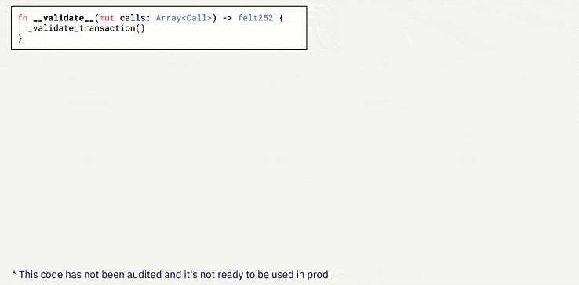
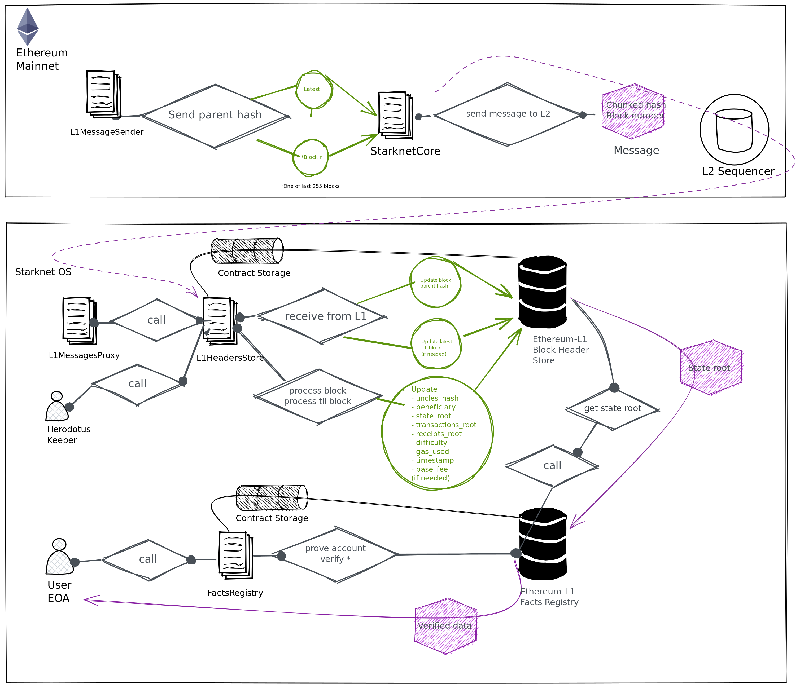

Introducción
¡Hola comunidad! üëã
Antes que nada nos gustaría expresar nuestro más sincero agradecimiento a todos aquellos que han contribuido y hecho posible la realización de esta exhaustiva investigación y documento sobre criptografía y como se adaptan en StarkWare. Especial reconocimiento a los expertos @X, @Y, @Z y @A, quienes han brindado sus valiosas correcciones y orientación en numerosos aspectos del trabajo. Su experiencia y conocimientos han sido fundamentales para alcanzar los resultados y conclusiones presentados en este informe.
En esta ocasión, estamos emocionados de presentar una serie de artículos profundos sobre el desarrollo detrás de Starkware. Recomendamos a los lectores que previamente hayan leído otros documentos y tengan conocimientos técnicos para una mejor comprensión, para este documento en concreto recomendamos:
Stark END-Game | Recursive Stark | Account Abstraction | Intro Maths Starks
El panorama actual es complejo, pero nos enorgullece contar con las mentes más brillantes trabajando en el ecosistema, una STARK que los une a todos.
¿Eres o serás uno de ellos? Antes de sumergirnos, exploraremos una serie de conceptos para establecer bases e historias sobre criptografía, lo que nos permitirá adentrarnos aún más en el ecosistema STARKs. ¡Comencemos!
Bases Criptográficas
La criptografía es el campo de estudio y desarrollo de técnicas y algoritmos para asegurar la confidencialidad, integridad y autenticidad de la información. Utilizando claves secretas o públicas, la criptografía transforma los datos en un formato incomprensible para terceros no autorizados, garantizando que solo los destinatarios legítimos puedan acceder a la información original. La criptografía desempeña un papel vital en la seguridad de las comunicaciones y el almacenamiento de datos, protegiendo la privacidad y la confianza en diversos ámbitos de la vida moderna.
-
Encryption: el cifrado es el proceso de convertir información legible en un formato ilegible llamado texto cifrado, mediante el uso de algoritmos y una clave. El objetivo principal del cifrado es proteger la confidencialidad de los datos, asegurando que solo las personas autorizadas puedan acceder y comprender la información cifrada. Para ello, se aplica una serie de transformaciones matemáticas al texto original, lo que dificulta su interpretación sin la clave correspondiente.
-
Cryptographic protocol: un protocolo criptográfico o protocolo de seguridad (también llamado protocolo de cifrado) es un protocolo abstracto o concreto que realiza funciones relacionadas con la seguridad, aplicando métodos criptográficos.​ Un protocolo describe la forma en que un algoritmo debe usarse.
-
Algorithm: un algoritmo de cifrado es un procedimiento que convierte un mensaje de texto plano en un texto cifrado. Los algoritmos modernos utilizan matemáticas avanzadas y una o varias claves de cifrado. Esto hace que sea relativamente fácil cifrar un mensaje, pero prácticamente imposible descifrarlo sin conocer las claves requeridas.
Esquema de cifrado
Estos esquemas definen cómo se realiza la transformación de los datos originales en texto cifrado y cómo se realiza la operación inversa para recuperar los datos originales a partir del texto cifrado. Un esquema de cifrado generalmente consta de los siguientes elementos:
-
Encryption Algorithm: vimos que es el conjunto de operaciones matemáticas utilizadas para cifrar los datos en texto cifrado.
-
Decryption Algorithm: es el conjunto de operaciones matemáticas inversas utilizadas para descifrar el texto cifrado y recuperar los datos originales.
-
Key: conocida como clave, es un valor secreto que se utiliza como entrada para el algoritmo de cifrado. La key determina cómo se realiza la transformación de los datos y es esencial para descifrar el texto cifrado.
-
Protocols: establecen cómo se utiliza el esquema de cifrado, incluyendo la generación y distribución segura de claves, el manejo de errores y la gestión de la seguridad.
Existen varios tipos de esquemas de cifrado:
-
El cifrado simétrico (donde se utiliza una sola clave tanto para cifrar como para descifrar),
-
El cifrado asimétrico o de clave pública (donde se utilizan pares de claves pública y privada)
-
Otras variantes de esquemas de cifrados como de flujo y de bloque. Cada esquema tiene sus propias características y se utiliza en diferentes contextos según los requisitos de seguridad y las necesidades específicas de la aplicación, pero nos centraremos en las principales para entender su funcionamiento antes de pasar a la evolución de las STARKs.
Criptografía Simétrica
La historia de la criptografía simétrica se remonta a tiempos antiguos, pero su uso moderno se consolidó en el siglo XX con el desarrollo de métodos más sofisticados. Un ejemplo icónico es la máquina Enigma, utilizada por los alemanes durante la Segunda Guerra Mundial para cifrar y descifrar mensajes, esta máquina demostró la eficacia de la criptografía simétrica en entornos militares.
Podemos ver la criptografía simétrica como una antigua y confiable llave maestra en el mundo de la seguridad informática. Es una técnica que ha sido utilizada desde hace mucho tiempo y aún en la actualidad sigue siendo efectiva y segura para proteger información en diversas situaciones.
Imagínate una llave que puede tanto cerrar como abrir una puerta. Los algoritmos criptográficos de clave simétrica funcionan de manera similar, utilizan la misma clave para cifrar el texto original y descifrar el texto cifrado, esta clave compartida es como el secreto que solo tú y los destinatarios autorizados conocen.

Sin embargo, a medida que la tecnología avanzaba y las capacidades de cómputo aumentaban, se hizo evidente que era necesario fortalecer los sistemas de cifrado. Surgieron nuevos desafíos y amenazas que requerían niveles más altos de seguridad. Es por eso que se desarrollaron otros métodos criptográficos, como la criptografía asimétrica, que utiliza pares de claves diferentes para el cifrado y el descifrado.
Aunque la criptografía simétrica ha evolucionado con el tiempo, todavía se utiliza ampliamente en muchos sistemas y aplicaciones. Su simplicidad y eficiencia la convierten en una opción popular para proteger datos en redes privadas, sistemas de comunicación y almacenamiento de información sensible.
Criptografía Asimétrica
Ahora hablemos como el concepto de algoritmos criptográficos de clave asimétrica, fue un enfoque revolucionario que introdujo un concepto completamente diferente, el uso de un par de claves complementarias, una pública y una privada, para asegurar la confidencialidad de los datos. Cada clave del par tenía una función específica:
- Public key: esta clave pública se compartía abiertamente y se utilizaba para cifrar la información.
- Private key: esta clave privada se guardaba cuidadosamente y se utilizaba para descifrarla.
Con la criptografía de clave pública, los mensajes cifrados podían ser transmitidos a través de redes inseguras sin el temor de que fueran interceptados y descifrados por personas no autorizadas, pero en este caso diferenciándose de la simétrica en que estos mensajes requerían un Private key y una Public key. Era como si se hubiera descubierto una nueva forma de comunicación secreta y segura en el mundo digital, fue un avance revolucionario en el campo de la criptografía.
Algunos de los más destacados y utilizados son los siguiente:
-
RSA - Rivest-Shamir-Adleman: es un sistema criptográfico asimétrico de clave pública desarrollado en 1979. Su seguridad radica en el problema de la factorización de números enteros y se utiliza en diversos ámbitos de la transmisión de datos en Internet debido a su facilidad de uso. Este sistema consta de una clave pública RSA y una clave privada RSA.
-
ECC - Elliptic Curve Cryptography: en la década de 1980 se desarrolló este enfoque de curva elíptica criptográfica, una variante de la criptografía asimétrica o de clave pública basada en las matemáticas de las curvas elípticas que proporciona niveles de seguridad similares o superiores a RSA pero con claves más cortas.
-
ECDSA - Elliptic Curve Digital Signature Algorithm: en los Años 1990 nació ECDSA, un algoritmo de firma digital y autenticación en criptografía asimétrica, basado en curvas elípticas. Se utiliza en criptografía para garantizar la autenticidad, integridad de los datos. ECDSA se basa en la dificultad computacional de resolver el problema del logaritmo discreto en curvas elípticas.
Criptografía Híbrida
El cifrado híbrido utiliza las propiedades únicas de la criptografía de clave pública para intercambiar información secreta a través de un canal no confiable, combinando la eficacia del cifrado simétrico. Esto proporciona una solución práctica de extremo a extremo para garantizar la privacidad de los datos.
Aunque los algoritmos de clave pública, como RSA-OAEP, son menos eficientes que los algoritmos simétricos, generalmente no se utilizan directamente para cifrar los datos. Sin embargo, desempeñan un papel importante en el ecosistema criptográfico al permitir el intercambio seguro de claves.
Para utilizar el cifrado simétrico, las partes deben compartir una clave. Si ya existe un canal seguro, se puede enviar la clave a través de él. Sin embargo, si no hay un canal seguro disponible, se resuelve el problema del intercambio de claves utilizando la criptografía de clave pública.
- DH - Diffie–Hellman: el intercambio de claves DH es un algoritmo criptográfico de clave pública diseñado específicamente para acordar una clave simétrica en ausencia de un canal seguro. La combinación de criptografía de clave pública para el intercambio de claves y el cifrado simétrico para el cifrado de datos en masa se conoce como cifrado híbrido.
El cifrado híbrido se utiliza ampliamente en los protocolos de transferencia de datos para la web, como en la capa de seguridad de transporte (TLS). Cuando te conectas a un sitio web que utiliza HTTPS (HTTP seguro con TLS), tu navegador negocia los algoritmos criptográficos que aseguran la conexión. Estos algoritmos incluyen métodos para el intercambio de claves, cifrado simétrico y firmas digitales.
Firmas digitales
Los esquemas de firma digital son un tipo de criptografía de clave pública que garantiza la integridad, autenticidad y no repudio de los datos.
Es importante destacar que el esquema de firma digital puede variar dependiendo del algoritmo utilizado, ECDSA, es un ejemplo común de esquema de firma basado en criptografía de curva elíptica. Aquí EC recordemos que representa la curva elíptica utilizada y DSA (una variante de los esquemas de firma Schnorr y ElGamal) el algoritmo de firma digital. Cada esquema tiene sus propias características y propiedades de seguridad, y se selecciona según los requisitos y consideraciones específicas de la aplicación.
Cuando se trata de firmas digitales, los pasos generales suelen ser los siguientes:
-
Key generation: el Generador de Claves es un protocolo o algoritmo que genera un Keypar, un par de claves asimétricas como se explicó anteriormente compuestas por una public key y una private key. En el caso de la criptografía de curva elíptica (como ECDSA), se generan los parámetros necesarios para definir la curva y se elige una clave privada aleatoria. A partir de la clave privada, se calcula la clave pública correspondiente utilizando operaciones matemáticas específicas.
-
Hash del mensaje: antes de firmar el mensaje, se aplica una función hash criptográfica al contenido del mensaje. Esto reduce el mensaje a un valor de longitud fija llamado resumen o hash. El objetivo es garantizar la integridad y eficiencia del proceso de firma, ya que es más rápido firmar y verificar un resumen más corto que el mensaje completo.
-
Digital Signature: este proceso tiene el propósito de realizar una serie de operaciones matemáticas utilizando la clave privada y el hash del mensaje para generar la firma digital.
-
Verify Signature: para verificar la autenticidad de la firma, se necesita la clave pública del firmante. Se aplica nuevamente la función hash al mensaje original y se utiliza la clave pública junto con la firma para realizar operaciones matemáticas específicas. Si el resultado coincide con la firma original, se considera que la firma es válida y se confirma la autenticidad del mensaje y del firmante.
El proceso de firma puede considerarse como el cifrado del archivo mediante la clave privada. Para ello, la persona que firma utiliza su clave privada para producir una firma.
Exploraremos a continuación la relevancia de los diversos esquemas de firmas para garantizar la seguridad de nuestros datos, así como la forma en que Starknet usa AA para abstraer la firma de la validación. En este contexto, se pueden diseñar diferentes esquemas o configuraciones, como el secp256r1, una variante de STARK Curve, la versión amigable de ECDSA optimizada en Starknet. Este esquema de firma se puede utilizar para incorporar firmas en dispositivos modernos de manera biométrica, aislada y abstraída por naturaleza, lo que mejora significativamente la eficiencia, tal como se discutirá en detalle más adelante.
Por lo tanto, resulta crucial abordar el siguiente apartado relacionado con el uso de Key generation que desempeñan un papel fundamental en este contexto.
Key generator
Tenemos que entender cómo el generador de claves (Key generator) genera el Keypair, para lograrlo, es necesario trabajar con valores pseudoaleatorios que se utilizan en la generación de la private key. Un Key generator se puede implementar en un sistema con el propósito de generar y autenticar claves.
Key generator puede implementarse en cualquier sistema criptográfico que utilice la curva elíptica, como es el caso de secp256k1 (una curva optimizada basada en las propiedades matemáticas de las curvas elípticas para proporcionar un esquema de firma digital seguro y eficiente), como Bitcoin y Ethereum.
Este generador de claves garantiza que, con alta probabilidad, las claves privadas generadas sean únicas y seguras, lo que a su vez respalda la integridad y autenticidad de las transacciones realizadas en la red.
Generadores de números pseudoaleatorios
Para garantizar la seguridad usando la pseudoaleatoriedad estadística de un PRNG - Pseudorandom number generator, es crucial contar con una semilla inicial. Si la semilla es fácilmente predecible, generará valores predecibles de números y todo el proceso será inseguro.
Para lograr una inicialización segura del generador pseudoaleatorio, es necesario recolectar Entropía, que representa la aleatoriedad necesaria en el proceso.
Entropía
La entropía o aleatoriedad impredecible en computación, generalmente se mide en bits. Tenemos varios ejemplos para entender el concepto y grado de aleatoriedad. Si mueve el mouse de su computadora, generará algunos eventos difíciles de predecir, como la ubicación de inicio y la ubicación final del cursor del mouse.
Si suponemos que el mouse ha cambiado su posición en el rango de
[ 0 ... 255 píxeles ], la entropía recolectada de este movimiento del mouse debe ser de aproximadamente 8 bits, porque2⁸ = 255
Si se le pide al usuario que piense en un número en el rango
[ 0 ... 1000 ], este número tendrá alrededor de 9-10 bits de entropía porque,2¹⁰ = 1024
Para recolectar 256 bits de entropía, es decir, para generar de forma segura un número entero de 256 bits, deberá tener en cuenta una secuencia de varios eventos similares (como movimientos del mouse e interracidades del teclado del usuario).
Aquí la importancia de dónde y cómo hemos generado nuestras claves privadas y públicas y las posibles vulnerabilidades en algunos malos usos.
Funciones hash y funciones hash criptográficas
Este apartado es de suma importancia para comprender el funcionamiento de las funciones hash. A diferencia de los esquemas de cifrado o las firmas, las funciones hash no requieren de una clave. Cualquier persona puede calcular el hash de una entrada determinada, y la función hash siempre producirá la misma salida para la misma entrada.
Así que podemos definir una función hash como un algoritmo que toma una entrada, como un mensaje o un archivo, y produce una salida de longitud fija llamada hash o resumen. Esta salida es única para cada entrada específica, lo que permite la verificación de la integridad de los datos y garantiza que cualquier cambio en la entrada resultará en un hash completamente diferente.
Una función hash criptográfica, por otro lado, es aquella función hash que se utiliza en el ámbito de la criptografía, para evaluar la seguridad de una función de hash criptográfica, se consideran las siguientes propiedades:
- Resistencia a la preimagen: partiendo de un valor
hash h, es difícil encontrar un mensajemque genere esehash, es decir,h = hash(m), este concepto está relacionado con el de una función de sentido único. Las funciones que carecen de esta propiedad son vulnerables a ataques de preimagen. - Resistencia a la segunda preimagen: dado un mensaje
m₁, es difícil encontrar otro mensajem₂distinto am₁que produzca el mismo valor de hash, es decir,hash(m₁) = hash(m₂). Esta propiedad también se conoce como resistencia débil a colisiones. Las funciones que no cumplen esta propiedad son vulnerables a ataques de segunda preimagen. - Resistencia a colisiones: es difícil encontrar dos mensajes diferentes
m₁ym₂que produzcan el mismo valor de hash, es decir,hash(m₁) = hash(m₂). Estas colisiones son conocidas como colisiones criptográficas de hash. Esta propiedad también se conoce como resistencia fuerte a colisiones. Se requiere que el tamaño del hash sea al menos el doble de largo para garantizar la resistencia a la preimagen.
Merkle Tree en Blockchain
Ahora que hemos comprendido mejor qué es un hash, veamos cómo en criptografía y ciencias de la computación, un árbol hash, también conocido cómo Merkle Tree o binary Merkle tree, es una estructura de datos utilizada para garantizar la integridad de los contenidos almacenados en un sistema, como la tecnología blockchain.
Podemos ver los Merkle Trees como una estructura de árbol en la que cada "hoja" o nodo terminal, está etiquetado con el hash criptográfico de un bloque de datos. A su vez, cada nodo que no es una hoja, también conocido como rama, nodo interior o inodo, está etiquetado con el hash criptográfico de las etiquetas de sus nodos secundarios.
La construcción de un Merkle Tree implica dividir los datos en bloques más pequeños y aplicar una función de hash criptográfico a cada uno de ellos. Luego, los bloques hash se combinan en pares y se vuelven a hashear, repitiendo este proceso hasta obtener un único hash llamado raíz de Merkle o “Merkle root”. Esta raíz se coloca en la cabecera de un bloque o transacción y se utiliza como una firma digital que representa y verifica la integridad de todos los datos incluidos en el bloque.
Una de las principales ventajas de los Merkle Trees es su capacidad para proporcionar una verificación eficiente y segura de los contenidos de una gran estructura de datos. Como cada nodo intermedio en el árbol está etiquetado con el hash criptográfico de las etiquetas de sus nodos secundarios, cualquier cambio realizado en los datos se reflejará en cambios en los hashes correspondientes.
En la tecnología blockchain que usan los Merkle Trees, los utilizan para garantizar la integridad de los datos almacenados en cada bloque de la cadena. Cada bloque contiene una lista de transacciones, y el Merkle Tree se construye utilizando los hashes de estas transacciones.
Cuando se agrega un nuevo bloque a la cadena, la raíz de Merkle del bloque anterior se incluye en el nuevo bloque, creando una cadena enlazada de árboles de Merkle. Esto permite verificar rápidamente la integridad de cualquier bloque en la cadena sin necesidad de verificar todos los datos desde el inicio. Además, si algún dato se modifica en un bloque, el hash del bloque cambiará, lo que afectará la raíz de Merkle y señalará la alteración en la cadena.
Algunos casos posibles de uso de los binary Merkle Trees para los diferentes esquemas pueden ser:
- Los binary Merkle Trees: son estructuras de datos muy eficientes para autenticar información que se presenta en formato de "lista", es decir, una secuencia de elementos consecutivos.
- Los transaction trees: también resultan beneficiosos, ya que una vez creado el árbol, no importa cuánto tiempo se tarde en editarlo, ya que permanecerá inmutable.
- Los State trees: sin embargo, cuando se trata de un árbol que almacena estados la situación se vuelve más compleja, el estado en Ethereum, que consiste en un mapa de valores clave donde:
- Las claves son direcciones
- Los valores son las declaraciones de cuenta que incluyen: saldo, nonce, código y almacenamiento asociados a cada cuenta, r
- Requiere la construcción de una prueba de transición de estado de Merkle (Merkle state transition proof)
Así que, comprender el funcionamiento de los State Trees y su optimización de datos es crucial en el contexto actual donde los datos y los hashes desempeñan un papel fundamental. En el caso de Ethereum, uno de los principales actores en el ámbito de los State Trees, se han incorporado modificaciones interesantes usando Patricia Merkle Trie.
Patricia Merkle Trie
La especificación de Ethereum define el Modified Merkle Patricia Trie (también conocido como MPT) este método se utiliza para guardar estados. Básicamente, el MPT es una combinación del Patricia trie y el Merkle tree, con algunas optimizaciones adicionales adaptadas a las características de Ethereum.
Patricia trie, (Radix tree o Radix trie), árbol de prefijos compacto (compact prefix tree) o árbol de prefijos comprimido (compressed trie), es una sofisticada estructura de datos que ofrece una optimización espacial en la representación de [Tries] (árboles de prefijos). Una de las características clave de este tipo de árbol es la fusión de nodos cuando un nodo es hijo único de su padre, lo que contribuye a una mayor eficiencia y rendimiento.
Esta estructura es un tipo de árbol de búsqueda k-ary, siendo un m-ary tree (también conocido como n-ary tree, k-ary tree o k-way tree) un árbol raíz en el cual cada nodo tiene como máximo m hijos. Ambas estructuras de datos se utilizan para localizar claves específicas dentro de un conjunto.
Estos árboles son completamente deterministas, lo que significa que aquellos con las mismas asociaciones de (clave, valor) están garantizados de ser idénticos, hasta el último byte. Esto asegura que tengan el mismo hash raíz, lo que proporciona la deseada eficiencia de O(log(n)) para inserciones, búsquedas y eliminaciones. Además, son más fáciles de entender y programar que alternativas más complejas basadas en comparaciones, como los red-black tree.
El Patricia Merkle Trie combina la estructura de un árbol de búsqueda binario con la estructura de árbol de Merkle, lo cual permite verificar eficientemente la integridad de los datos y proporciona una representación compacta del estado completo de la cadena.
El uso del Patricia Merkle Trie en Ethereum ofrece ventajas significativas en términos de eficiencia y escalabilidad. Permite realizar consultas rápidas sobre el estado de las cuentas y los contratos, evitando la necesidad de recorrer todo el estado completo. En cambio, solo es necesario verificar y acceder a los nodos relevantes en el árbol, lo que ahorra tiempo y recursos.
Además, esta estructura de árbol facilita la implementación de funciones de snapshot y revert en Ethereum. Estas funciones permiten crear instantáneas del estado del sistema en momentos específicos y revertir cambios en caso de errores o ataques, brindando una capa adicional de seguridad y confiabilidad a la red blockchain.
La comprensión de los Merkle Trees y el MPT resulta especialmente relevante al explorar otras estructuras de datos criptográficas, como las Merkle Mountain Ranges (MMRs) en Herodotus para las Storage Proof. Las MMRs pueden considerarse una lista de Árboles de Merkle, donde cada árbol se representa como una montaña y la lista completa forma el rango. La utilización de funciones hash específicas y sus características de seguridad se explorarán para comprender cómo crear estos árboles de manera eficiente y óptima.
Por lo tanto, es crucial comprender a fondo las diferentes funciones hash y sus propiedades para tomar decisiones informadas sobre la selección y optimización de las mismas en la construcción de estructuras de datos criptográficas más eficientes y seguras en los Árboles de Merkle.
Las funciones hash desempeñan un papel fundamental en garantizar la integridad y la seguridad de los datos almacenados en los árboles de Merkle, ya que se utilizan para calcular los hashes de los nodos y verificar su integridad durante la construcción y la verificación del árbol.
SHA-256
Es hora de examinar algunos ejemplos de funciones hash criptográficas ampliamente utilizadas, un ejemplo es SHA-256 (Secure Hash Algorithm 256-bit), que es una función de hash criptográfica perteneciente a la familia de algoritmos SHA-2. Esta función acepta una entrada de cualquier longitud y genera una salida de 256 bits que se considera única y asociada de forma irreversible a dicha entrada.
Pueden probar la generación de un hash utilizando cualquier generador en línea. En este caso, realizamos pruebas utilizando la función hash SHA-256 y keccak-256, también pueden explorar y probar más funciones hash desde aquí.
El cambio de un solo bit causa un efecto avalancha, lo que significa que incluso un cambio mínimo como un . en la entrada, produce un cambio significativo en la salida. Puedes revisar el hash de L2 en Español y L2 en Español.
SHA-256 se utiliza ampliamente en criptografía, y cuenta con diversos casos de uso destacados:
- Verificación de integridad:
SHA-256se utiliza para verificar la integridad de los datos almacenados en un sistema. Al calcular el hash de un archivo o conjunto de datos, se puede comparar con el hash original para detectar cualquier cambio o alteración en los datos. - Firmas digitales: las firmas digitales se generan mediante algoritmos criptográficos y se basan en la función SHA-256 para asegurar la autenticidad e integridad de los mensajes. El hash
SHA-256se utiliza para resumir y proteger la información que se firma digitalmente. - Almacenamiento seguro de contraseñas: en lugar de almacenar contraseñas en texto plano, los sistemas de seguridad suelen almacenar el hash
SHA-256de las contraseñas. Cuando un usuario ingresa su contraseña, se calcula el hash y se compara con el valor almacenado, lo que permite verificar la autenticidad de la contraseña sin almacenarla directamente. - Generación de claves criptográficas:
SHA-256se utiliza en algoritmos de generación de claves criptográficas para producir claves aleatorias y seguras.
En resumen, SHA-256 es una función hash criptográfica ampliamente utilizada que forma parte de la familia de algoritmos SHA-2, la hace ideal para verificar la integridad de los datos, generar firmas digitales, almacenar contraseñas de forma segura y generar claves criptográficas. SHA-256 ha demostrado su robustez y eficacia en numerosos casos de uso en criptografía. Ahora es el turno de explorar otra función hash criptográfica más moderna llamada Keccak.
Keccak - El nuevo SHA-3
Ahora nos centraremos en el SHA-3 (Secure Hash Algorithm 3), es un estándar de función hash criptográfica diseñado por los criptógrafos Joan Daemen y Gilles Van Assche. El algoritmo utilizado en SHA-3 se llama Keccak, el cual fue seleccionado como el ganador del concurso organizado por el Instituto Nacional de Estándares y Tecnología (NIST) para encontrar un nuevo estándar de función hash criptográfica.
A diferencia de SHA-256, Keccak utiliza una estructura y operaciones diferentes. En lugar de rondas, Keccak se basa en una construcción llamada función de esponja (Sponge function), que se basa en una función pseudoaleatoria amplia o (permutation) pseudoaleatorio permitiendo ingresar "absorbing" y "squeezing".
Keccak-256 es una función hash criptográfica utilizada en Ethereum. Pertenece a la familia de algoritmos SHA-3 y se emplea ampliamente en la plataforma Ethereum para diversos propósitos.
Algunos casos de uso de Keccak-256 incluyen:
- Ethereum utiliza
Keccak-256para garantizar la integridad de los datos y generar identificadores únicos (hash) para verificar la autenticidad de los archivos y mensajes en sistemas criptográficos. - También se utiliza en la firma criptográfica de pequeño tamaño, donde en lugar de firmar la entrada completa, se firma el hash
Keccak-256del mensaje o dato. Keccak-256es utilizado para obtener una identificación única y determinista de una colección de datos. Por ejemplo, en Ethereum, las direcciones de Ethereum se derivan de claves públicas o contratos utilizando la función hash unidireccionalKeccak-256.
Las direcciones Ethereum son números hexadecimales, identificadores derivados de los últimos 20 bytes del hash Keccak-256 de la clave pública.
A diferencia de las direcciones de Bitcoin, que están codificadas en la interfaz de usuario de todos los clientes para incluir una suma de verificación incorporada para proteger contra direcciones mal escritas, las direcciones de Ethereum se presentan como hexadecimales sin ninguna suma de verificación.

El algoritmo Keccak utiliza la Sponge construction para procesar los datos de entrada de longitud variable para generar una salida de longitud variable. Esta construcción se basa en una función interna llamada "F" que opera en un número fijo de bits, denotado como "width" (anchura).
La anchura total del algoritmo Keccak se determina sumando dos componentes, el valor de "r" (rate) y el valor de "c" (capacity), donde b = r + c.
- El valor de
"r"representa la cantidad de bits absorbidos en cada paso de la función esponja, es decir, la capacidad de absorción de la esponja. Un valor de"r"más grande permite procesar más información en cada paso, lo que reduce la cantidad de pasos necesarios para procesar una entrada específica. - El valor de
"c"representa la capacidad de la esponja, es decir, la cantidad de bits que se mantienen en el estado interno del algoritmo después de cada paso de absorción. Estos bits se mezclan con los datos de entrada y el resultado de la función interna"F". La capacidad afecta la resistencia del algoritmo a ataques criptográficos como colisiones o preimagen.
La suma de "r" y "c" da como resultado el número total de bits, "b", utilizados en la función esponja de Keccak. Este valor determina la longitud del estado interno y, por lo tanto, la longitud de la salida generada por el algoritmo.
Funcionamiento keccak
El algoritmo funciona de la siguiente manera, inicialmente la cadena de entrada se rellena con bits adicionales para enmascarar el mensaje inicial y se divide en bloques de longitud "r" bits. Luego, los "b" bits de estado se inicializan a 0, que da inicio a la Sponge construction en dos fases "absorbing" y "squeezing".
- Fase Absorbing: a los bloques de entrada de longitud
r-bitsse les aplica un XOR (toma dos bits y devuelve un resultado que es 1 si solo uno de los bits es 1, y 0 en caso contrario) a los primerosrbits del estado, alternándose con la funciónf. Cuando todos los bloques han sido procesados, se pasa a la siguiente fase. - Fase Squeezing: los primeros
rbits del estado son devueltos como bloques de salida, alternándose con ejecuciones de la funciónf. El número de bloques de salida es seleccionado por el usuario.
A continuación os dejamos una tabla que enumeran algunas de las diferencias entre SHA-256 y Keccak-256.

Vemos cómo cada tipo de criptografía o función hash tiene características distintas. En el contexto actual de la computación cuántica en constante evolución, es crucial abordar las preocupaciones emergentes sobre seguridad. Algunos algoritmos criptográficos podrían ser vulnerables a los ataques cuánticos en un futuro cercano. Es en este punto donde entra en juego el concepto de criptografía Post-Quantum.
Quantum Secure
Así que es hora de aprovechar lo que hemos aprendido y explorar lo que podría suceder en un escenario teórico apocalíptico. Pero antes comencemos con una breve descripción sobre computación cuántica para sumergirnos en el tema. No es más que un modelo de computación basado en la física cuántica, que funciona de manera diferente a las computadoras clásicas (el tipo de computadoras que usamos habitualmente) y tiene la capacidad de realizar tareas que estas últimas no pueden, como romper ciertos algoritmos de manera eficiente.
¡Así que espera un momento! Antes de que tu imaginación se desborde y te veas rodeado de supercomputadoras cuánticas capaces de solucionar todos nuestros problemas, déjame contarte una pequeña anécdota.
Ah, las computadoras cuánticas, esas criaturas de la física cuántica que nos hacen soñar con un futuro lleno de posibilidades. Pero, ¿sabías que no son máquinas mágicas capaces de resolver todos nuestros problemas informáticos en un abrir y cerrar de ojos?
Imagina esto: las computadoras cuánticas son como esas personas brillantes que son súper eficientes en ciertas tareas, pero bastante débiles en otras. Son como el genio matemático que resuelve complicados problemas de cálculo en segundos, pero se le olvida cómo atarse los zapatos.
Entonces, sí, las computadoras cuánticas pueden ser increíblemente poderosas cuando se trata de ciertos problemas específicos, como el factorizar números grandes o buscar en enormes bases de datos. Pero cuando se trata de tareas cotidianas, como revisar correos electrónicos o navegar por la web, bueno, digamos que son como un caracol tratando de correr una maratón.
Después de esta pequeña relato, es importante comprender el concepto de criptografía post-cuántica (PQC), también conocida como Resistente a la Computación Cuántica, se refiere a algoritmos criptográficos especialmente algoritmos de clave pública, que se consideran seguros contra los ataques criptoanalíticos llevados a cabo por computadoras cuánticas.
A medida que avanza la computación cuántica, se espera que algunos algoritmos y técnicas criptográficas tradicionales utilizadas en los sistemas de seguridad actuales sean vulnerables a los ataques cuánticos. Esto se debe a la capacidad de las computadoras cuánticas para realizar cálculos a una escala exponencialmente mayor que las computadoras clásicas, lo que podría comprometer la seguridad de los sistemas criptográficos actuales.
Es bien sabido en informática que las computadoras cuánticas podrán romper algunos algoritmos criptográficos, especialmente los criptosistemas de clave pública como RSA, el intercambio de llaves Diffie–Hellman y ECDSA, que dependen del IFP (problema de factorización en números primos), el DLP (problema del logaritmo discreto) y el ECDLP (problema del logaritmo discreto de curva elíptica). Todos estos problemas podrían resolverse fácilmente en una computadora cuántica suficientemente poderosa que ejecute el algoritmo de Shor.
Pero los algoritmos cuánticos no significarán el fin de la criptografía, porque:
- Solo algunos criptosistemas son inseguros frente a la computación cuántica (como RSA, DHKE, ECDSA y ECDH).
- Algunos criptosistemas son seguros frente a la computación cuántica y solo se verán ligeramente afectados (como los hash criptográficos, algoritmos MAC y cifrados de clave simétrica como AES, siempre que se utilicen tamaños de clave suficientemente grandes).
A diferencia de la amenaza que representa la computación cuántica para los algoritmos de clave pública actuales, la mayoría de los algoritmos criptográficos simétricos y las funciones hash actuales se consideran relativamente seguros contra ataques de computadoras cuánticas. Si bien el algoritmo cuántico de Grover acelera los ataques contra los cifrados simétricos, duplicar el tamaño de la clave puede bloquear eficazmente estos ataques. Por lo tanto, la criptografía simétrica post-cuántica no necesita diferir significativamente de la criptografía simétrica actual.
El algoritmo de Grover y la búsqueda no estructurada
El algoritmo de Grover es un algortimo cuántico para la búsqueda en una secuencia no ordenada de datos con N componentes en un tiempo O(N¹/₂), y con una necesidad adicional de espacio de almacenamiento de O(logN). Fue inventado por Lov K. Grover en 1996.
Aunque el algoritmo de Grover es eficiente, su paralelización óptima resulta complicada y no se espera que las computadoras cuánticas actuales tengan suficiente potencia para comprometer la seguridad de esquemas como ECDSA o de funciones de hash como SHA256.
El algoritmo de Shor teórico y su impacto en ECDSA
El algoritmo de Shor es un algoritmo cuántico desarrollado por Peter Shor en 1994. Este algoritmo es conocido por su capacidad para factorizar grandes números enteros de manera mucho más eficiente que los algoritmos clásicos conocidos, lo que tiene implicaciones importantes para la seguridad de algunos sistemas criptográficos basados en la factorización de números enteros.
En el contexto de sistemas centralizados, como los sistemas bancarios, ECDSA se utiliza para garantizar la autenticidad de las transacciones, proteger la confidencialidad de la información y asegurar la integridad de los datos. En el ámbito de Bitcoin y Ethereum, si bien los algoritmos de búsqueda cuántica, como el algoritmo de Shor, podrían eventualmente romper la ECDSA, es importante destacar que estos algoritmos aún están en una etapa teórica.
Cada implementación de algoritmos o protocolos puede ser diversa, ya sea privada o abstracta. Nos hemos centrado en los principios básicos comunes de ECDSA, además se espera que la implementación práctica de algoritmos de búsqueda cuántica sea un desafío técnico debido a los requisitos de recursos y la necesidad de superar errores cuánticos.
Aquí tienes una descripción general de en qué consisten algunos problemas que se consideran complejos de resolver mediante la computación clásica.
IFP
El IFP se refiere al desafío de descomponer un número entero grande en sus factores primos. En el caso de números pequeños, esto puede hacerse fácilmente mediante el uso de algoritmos como el cribado de Eratóstenes o el algoritmo de factorización de Pollard.
A modo de ejemplo simplificado, supongamos que queremos factorizar el número compuesto N = 35 utilizando el algoritmo de Shor. Después de aplicar el algoritmo, encontraríamos que los factores primos de N son 5 y 7.
Sin embargo, a medida que los números crecen en tamaño, el IFP se vuelve cada vez más difícil de resolver. De hecho, la seguridad de muchos sistemas criptográficos se basa en la dificultad de factorizar números grandes en tiempo razonable, como el popular algoritmo RSA.
DLP
Por otro lado, el DLP implica encontrar el exponente desconocido de una potencia modular dada. En términos más sencillos, se trata de resolver la ecuación (y = gˣ mod p) para el exponente desconocido (x), donde (g) y (p) son números conocidos e (y) es el resultado de la operación de potenciación modular. Para valores pequeños de (p), el DLP puede resolverse mediante la aplicación de métodos exhaustivos como la prueba y error.
A modo de ejemplo simplificado, sería encontrar el logaritmo discreto de base 2 para el número 5 módulo 11. Esto implica encontrar el valor de x en la ecuación 2ˣ ≡ 5 (mod 11).
Realizando los cálculos paso a paso:
- 2¹ ≡ 2 (mod 11)
- 2² ≡ 4 (mod 11)
- 2³ ≡ 8 (mod 11)
- 2⁴ ≡ 5 (mod 11)
Entonces, el valor de x que satisface la ecuación 2ˣ ≡ 5 (mod 11) es x = 4.
ECDLP
La seguridad de esquemas criptográficos basados en ECC, como ECDSA, se basa en la dificultad de resolución del problema del logaritmo discreto de curva elíptica o ECDLP. Las curvas elípticas son objetos matemáticos utilizados en criptografía de clave pública, y el ECDLP sería el problema de hallar el valor de ‘K’ en esta ecuación, P =k⋅G, donde P es un punto en la curva, k es el valor que debemos hallar y G es un punto base conocido (el generador).
Al igual que en el caso del DLP, el ECDLP se vuelve más difícil de resolver a medida que el tamaño de los números involucrados en esas expresiones matemáticas aumentan
ECDSA
Por último llegamos a un algoritmo ampliamente utilizado y conocido como es el ECDSA, que se utiliza comúnmente en blockchain. La clave pública se obtiene multiplicando un punto base conocido (llamado generador) en la curva elíptica por un entero, que representa la llave privada. El desafío radica en encontrar ese valor privado a partir del punto público conocido en la curva.
La curva el√≠ptica secp256k1 está definida por la ecuaci√≥n: y¬≤ = x¬≥ + ax + b sobre ùîΩp donde p es un número primo grande.
El algoritmo de Shor, en su versión completa y ejecutado en un computador cuántico lo suficientemente grande y estable, podría factorizar el número primo p en esta ecuación, lo que proporcionaría información sobre el orden del subgrupo cíclico relacionado con la curva.
Si se pudiera determinar el orden del subgrupo cíclico relacionado con la curva secp256k1 utilizando el algoritmo de Shor, sería posible encontrar el valor privado a partir de la clave pública. Esto comprometería la seguridad de ECDSA, ya que la clave privada es fundamental para generar firmas digitales y autenticar transacciones. Es importante destacar que el algoritmo de Shor plantea un desafío para los sistemas criptográficos actuales basados en la factorización de números enteros o en el logaritmo discreto, como RSA y ECDSA.
No obstante, la implementación práctica de un algoritmo cuántico capaz de realizar estos cálculos, como los mencionados ejemplos, todavía se encuentra en desarrollo y no representa una amenaza inmediata para los sistemas criptográficos utilizados en la actualidad. La investigación y el desarrollo continuo en criptografía pos-cuántica son fundamentales para garantizar la seguridad en un entorno tecnológico en constante evolución.
Criptografía basada en Lattice previene Shor
Ahora deberemos aprender cómo una verificación de esquemas de firmas puede ser lo suficientemente fuerte para prevenirnos contra un posible ataque ejecutado con el algoritmo de Shor, la criptografía basada en retículos (Lattice), es una forma segura de protegerse frente a muchos algoritmos.
Pensemos en un retículo, como una estructura matemática que se forma mediante una red de puntos en un espacio n-dimensional. Es similar a una cuadrícula o una rejilla en dos dimensiones, pero se extiende a cualquier número de dimensiones. Cada punto en el retículo está ubicado en una posición determinada y está conectado a los puntos vecinos por líneas rectas de igual longitud.
En el contexto de la criptografía basada en retículos, se utilizan retículos en teoría de números para construir sistemas criptográficos. Estos retículos se definen mediante un conjunto de vectores base, que son combinaciones lineales de vectores de coordenadas con coeficientes enteros. Los retículos tienen propiedades matemáticas interesantes, como la propiedad de ser densos y uniformes en el espacio.
Los problemas computacionales basados en retículos, como el problema de la aproximación más cercana en retículos o el problema del vector corto más cercano, se utilizan en criptografía para establecer la seguridad de los esquemas basados en retículos. Estos problemas son difíciles de resolver y se cree que no existen algoritmos eficientes para resolverlos en el caso general, lo que brinda seguridad a los sistemas criptográficos basados en retículos.
La criptografía basada en retículos es el término genérico para las construcciones de primitivas criptográficas que involucran retículos, ya sea en la construcción misma o en la prueba de seguridad.
Las construcciones basadas en retículos son actualmente candidatas importantes para la criptografía post-cuántica. A diferencia de los esquemas de clave pública más ampliamente utilizados y conocidos, como RSA, Diffie-Hellman o los criptosistemas de curva elíptica, que teóricamente podrían ser derrotados utilizando el algoritmo de Shor en un computador cuántico, algunas construcciones basadas en retículos parecen ser resistentes a los ataques tanto de computadoras clásicas como cuánticas. Además, muchas construcciones basadas en retículos se consideran seguras bajo la suposición de que ciertos problemas computacionales bien estudiados en retículos no pueden ser resueltos.
Aquí hay una breve explicación de las diferencias entre los esquemas de criptografía basados en retículos en términos de encriptación, funciones hash y intercambio de claves:
- Encriptación basada en retículos: los esquemas de encriptación basados en retículos aprovechan las propiedades matemáticas de los retículos para proporcionar seguridad en la comunicación.
- Funciones hash basadas en retículos: las funciones hash basadas en retículos utilizan retículos y operaciones matemáticas relacionadas para calcular los hashes y se utilizan en diversas aplicaciones criptográficas, como la integridad de datos y la firma digital.
- Intercambio de claves basado en retículos: el intercambio de claves basado en retículos como el (Intercambio NewHope Protocol) implica el establecimiento de una clave compartida entre dos o más partes que desean comunicarse de manera segura. Los protocolos de intercambio de claves basados en retículos utilizan los retículos y los problemas computacionales relacionados con ellos para garantizar que las partes puedan acordar una clave sin que un tercero pueda determinarla. Estos esquemas se basan en la dificultad de resolver ciertos problemas matemáticos relacionados con los retículos para asegurar la confidencialidad de la clave compartida.
Kyber Crystal
En el último estudio post-quantum veremos Kyber, antes de entrar dentro del ecosistema de Starkware y aprender cómo se generan los contratos de cuentas, así como las características criptográficas y matemáticas detrás de las STARKs.
Kyber es un método de encapsulación de clave (KEM) diseñado para resistir ataques criptoanalíticos realizados por futuras computadoras cuánticas poderosas. Se utiliza para establecer un secreto compartido entre dos partes que se comunican, sin que un atacante (IND-CCA2) en el sistema de transmisión pueda descifrarlo. Este criptosistema asimétrico utiliza una variante del problema de redes de aprendizaje con errores (learning with errors, LWE) como su función básica con trampa. Ganó la competencia del NIST para el primer estándar de criptografía PQ.
La generación de claves en Kyber no se basa en la factorización de enteros o en problemas relacionados con las curvas elípticas, sino que utiliza el problema de aprendizaje con errores en retículos como base para la seguridad del algoritmo.
El sistema se basa en el aprendizaje con errores en módulos (M-LWE) del campo del aprendizaje automático, en conjunto con anillos ciclotómicos. Recientemente, también se ha logrado una reducción formal matemática estrecha de la problemática del anillo LWE al MLWE. En comparación con otros métodos de criptografía post-cuántica, tiene las ventajas típicas de los métodos basados en retículos, como el tiempo de ejecución, el tamaño de los textos cifrados y el material clave.
En cuanto a los parámetros, Kyber proporciona diferentes conjuntos para alcanzar diferentes niveles de seguridad. Por ejemplo, Kyber-512 tiene una seguridad aproximada equivalente a AES-128, Kyber-768 tiene una seguridad aproximada equivalente a AES-192 y Kyber-1024 tiene una seguridad aproximada equivalente a AES-256.
En resumen, Kyber utiliza un enfoque matemático diferente a ECDSA en la generación de claves. Se basa en el problema de aprendizaje con errores en retículos y en la selección adecuada de parámetros de seguridad. La seguridad de Kyber radica en la dificultad de resolver problemas criptográficos específicos asociados a ese enfoque matemático.
Con esto hemos concluido las bases criptográficas que nos han brindado los detalles de cómo se generan los distintos tipos de criptografía simétrica o asimétrica, así como las funciones hash y su importancia en la seguridad. Nos adentramos en cómo se integraban en los Merkle Tree o Patricia Trie, para luego explorar el ámbito de la computación cuántica y ver cómo se podían resolver algunos de los problemas planteados por ciertas criptografías. También destacamos la importancia de las firmas y las verificaciones de firmas en los avances de la tecnología de la computación cuántica.
La computación cuántica se mostró resistente a las bases simétricas de una llave maestra o a las funciones hash en sí. Además, presenciamos avances en la prevención de ataques cuánticos y en algoritmos cuánticos como Lattice o encapsulamientos por Kyber. Con estos avances en mente, es hora de pasar a ver las EOA (Externally Owned Accounts) y los firmantes en Ethereum, para luego diferenciarlos de la Account Abstraction nativa en Starknet.
EOA y AA - Firmantes
Las cuentas de EOA (Externally Owned Accounts) en Ethereum, al igual que muchas otras criptomonedas, utilizan el algoritmo ECDSA que aprendimos antes para generar claves y firmar transacciones digitalmente. Esto les permite participar de manera segura en la red y realizar operaciones. Las EOA son cuentas que pertenecen a usuarios externos a la cadena de bloques.
En Ethereum, el estado de una cuenta solo puede ser modificado a través de transacciones, las cuales deben ser iniciadas por una EOA. sin embargo, no cualquier persona puede activar una transacción desde cualquier EOA, aquí es donde entra en juego el concepto de firmante.
Cada cuenta en Ethereum está asociada con un objeto criptográfico llamado keypair, como aprendimos antes.
La clave privada, se utiliza para firmar mensajes digitales, mientras que la clave pública permite que cualquiera pueda verificar que una firma en particular fue generada por la clave privada correspondiente.
La asociación entre una cuenta y un firmante se realiza mediante la dirección de la cuenta. La dirección de un EOA se deriva de la clave pública del firmante, específicamente, la dirección se obtiene tomando los últimos 20 bytes del hash Keccak-256 de la clave pública.
El propietario de una cuenta puede autorizar una transacción desde su cuenta firmando los parámetros de la transacción con la clave privada correspondiente.
La curva elíptica secp256k1 es una de las curvas elípticas más utilizadas en criptografía, especialmente en el contexto de criptomonedas como Bitcoin o Ethereum. Esto ha permitido establecer esquemas de firmas digitales que garantizan la integridad de las transacciones al asegurar la autenticidad de las claves.
La abstracción de firma y clave privada es una propiedad presente en algunos sistemas criptográficos, como ciertos esquemas de firmas digitales basados en identidad. Sin embargo, en el caso del algoritmo ECDSA utilizado en Ethereum y muchas otras blockchain, la firma está inherentemente vinculada a la clave privada de la cuenta y no es posible separarlas o abstraerlas, como podría ser el caso en otros esquemas diseñados con estos principios.
Ahora que ya hemos adquirido los conceptos básicos y hemos prestado atención para adquirir la formación adecuada y avanzada, podemos sumergirnos en el apasionante ecosistema de StarkWare, Starknet, StarkEx y STARKs. Nuestra mente está mejor preparada para embarcarnos en el viaje que nos espera en el resto del documento y en las futuras series.
Starknet AA
Esperamos que haya disfrutado de la primera parte, donde se presentaron conceptos generales de criptografía. Ahora nos adentraremos en un tema aún más interesante, Starknet y cómo mejora el ecosistema, exploraremos cómo los contratos de cuentas (CA) y el esquema de firmas abstraídas de Starknet ofrecen beneficios significativos frente al ERC-4337.
Si deseas aprender más sobre el concepto y las variantes del ERC-4337, te recomendamos leer esta serie de artículos en el blog de Argent. La serie está compuesta por la Parte 1, Parte 2 y Parte 3. Argent y Braavos son Smart wallets que aprovechan el poder del AA nativo en Starknet. También te recomendamos leer los artículos de Braavos de Guide 101 AA y Security Pyramid AA, los cuales presentan optimizaciones adicionales y capas de seguridad que exploraremos más adelante. Estos recursos te proporcionarán una mejor comprensión del concepto de AA y del ERC-4337.
¡Así que sin más preámbulos, bienvenidos a Starknet!
En el ecosistema de Starknet, se encuentran diversas metodologías para generar claves y firmas. A diferencia de las cuentas EOA, en Starknet se emplea Account Abstraction (AA) para la implementación de Contract Accounts (CA). Estos contratos son responsables de establecer la lógica en nuestras cuentas dentro de Starknet, incluyendo la validación del esquema de firma abstraído.
En lugar de utilizar ECDSA, Starknet utiliza una variación llamada [STARK Curve], un tipo de curva elíptica más amigable y optimizada que es nativa en el ecosistema, esta variante nos ofrece mejoras y características específicas para las necesidades de Starknet.
Lo grandioso de tener esta abstracción nativa es que permite añadir diferentes lógicas en tus esquemas o capas adicionales. Normalmente, se utiliza un sistema asimétrico usando la curva elíptica secp256k1, basado en la pseudoaleatoriedad y diversas operaciones matemáticas utilizando dicha curva, para generar claves privadas y públicas. Sin embargo, también se pueden añadir curvas adicionales de forma nativa al crear un CA, como lo ha hecho Braavos con la secp256r1. Esta curva cuenta con un sistema de firmas integrado, mejor optimizado y preparado para dispositivos modernos, donde el signer puede almacenar los datos habilitados por biometricidad en dispositivos aislados y seguros, como el módulo "Enclave" de Apple.
La AA desempeña un papel crucial al abstraer el esquema de firmas o verificación de firmas de la ejecución. Como vimos anteriormente, podemos generar una clave privada y mediante ECDSA generar una clave pública. En este caso el poseedor de esta clave privada y del esquema de firma asociado tiene el poder de realizar transacciones en Starknet, los dos tipos de transacciones son DEPLOY o INVOKE.

Con AA podemos modificar estas firmas o curvas. Por ejemplo, la curva Secp256r1, vimos que ofrece una seguridad adicional en Braavos al configurar una firma biométrica en el módulo de seguridad del enclave. De esta manera, esta firma biométrica solo puede ser añadida gracias a AA.
Todo esto es posible gracias al lenguaje de programación utilizado en la implementación, el poderoso Cairo, así que analicemos cómo Cairo incorpora esta abstracción en su programación.
En primer lugar, se necesita validar la firma y comprobar que coincide con la generada mediante ECDSA antes de proceder a la ejecución. Estas dos funciones principales son validate y execute. Además, execute también puede realizar múltiples llamadas utilizando execute_calls.

Ahora analicemos cómo Cairo incorpora esta abstracción en su programación.
Veamos cómo funciona un ciclo de transacción con AA nativa y cómo se representa gráficamente este ciclo completo de firmas para detectar si es correcto y realizar la operación.
También pensemos en cómo se podrían combinar de manera eficiente firmas como ha realizado Braavos con la EC secp256r1 o incluso realizar la verificación de firmas, como vimos con Lattice para prevenir ataques cuánticos.

Los conocimientos previos adquiridos nos han enseñado muchas cosas, una de ellas es cómo el algoritmo de Shor puede teóricamente romper ECDSA, pero no podrá romper una prueba STARK.
En la sección de generación de STARKs, aprenderemos como gracias a sus bases de criptografía simétrica y otras variables, si alguien nos roba, hackea o perdemos la cuenta, el esquema PQS para la prueba no será de mucha utilidad, ya que no se ha alterado la integridad del estado de los datos, sino que por oun teórico ataque criptoanalítico se habrá obtenido tu PK, lo que permitiría mover los fondos de forma justa.
Pero, ¿qué sucedería si tuviéramos un esquema de verificación de firmas seguro frente a un ataque cuántico?
Aquí es donde entran en juego pequeños cambios, específicamente en la parte de validación y no de ejecución, con las mejoras en Starknet y con la ayuda de AA nativo, está implementando para prepararse para el futuro. Una posibilidad sería el uso de Lattice o Kyber, aunque el futuro no está escrito, así que ha llegado el momento de ver cómo se genera la parte de la EC.
EC en Cairo - STARK Curve
Como hemos visto en el contexto de los sistemas criptográficos, la elección de la curva elíptica adecuada es de suma importancia. En este caso, se utiliza una variante de EC la cual ha sido especialmente diseñada y optimizada para su aplicación en el entorno de Starknet.
La STARK Curve (EC.cairo) se define mediante la ecuación:

Los valores específicos de α, β y p utilizados en esta curva han sido cuidadosamente seleccionados para proporcionar propiedades criptográficas sólidas y un rendimiento eficiente en el contexto de los contratos de cuenta nativos en Starknet.
En particular, los valores de α, β (notese que es π “PI” sin decimales usando 67 digitos) y p son los siguientes:
Estos valores aseguran que la curva elíptica Stark-friendly cumple con los requisitos de seguridad necesarios para su aplicación en sistemas criptográficos.
Además se utiliza un punto generador (G) específico asociado a esta curva. El punto generador G se define como:

Este punto generador desempeña un papel fundamental en el esquema de firmas digitales ECDSA, permitiendo la generación de claves públicas, como aprendimos al momento de hablar del Generador de Claves.
La elección de la curva elíptica Stark-friendly y el punto generador G asociado a ella proporcionan una base sólida y optimizada para la implementación de esquemas criptográficos en el entorno de Starknet. Estos elementos garantizan la seguridad y eficiencia necesarias para la creación de contratos de cuenta nativos y la verificación de firmas digitales en el sistema.
Si desea probar y adentrarse en el despliegue de cuentas en Starknet, o si está interesado en aprender cómo se generan y calculan off-chain, y luego financiar esas cuentas para que los contratos de cuenta se autodesplieguen, le animamos a seguir los ejercicios oficiales de Starknet-Edu Account o las Guías Completas Cairo 1 proporcionadas por Starknet-Es para realizar pruebas reales.
My Braavos - Secp256r1
Empecemos con un dato que no habíamos comentando antes, la k en sepc256k1 significa Koblitz y el r en sepc256r1 significa random.
Braavos ha incorporado la firma y validación de transacciones utilizando secp256r1, lo que brinda una excelente experiencia al usuario final al permitir transacciones con firma biométrica en el dispositivo del usuario. Esto añade un nivel adicional de seguridad. Braavos ha presentado en su blog una Pirámide de Seguridad AA.
Podemos ver en la cúspide de la pirámide al Multi-Signer (3FA). El Multi-Signer combina la protección de la frase de recuperación (seed phrase) en la extensión del navegador y el Hardware Signer o Protected Signer utilizando el dispositivo móvil.
Ahora se requieren dos firmas de dos claves diferentes para ejecutar la transacción en la cadena, obteniendo una autenticación de 3FA:
- Algo que sabemos: la clave derivada de tu frase de recuperación en la extensión del navegador.
- Algo que tenemos: tu dispositivo móvil.
- Algo que somos: tu huella dactilar o identificación biométrica facial.
Cabe destacar que aunque se ha agregado otro firmante, no se ha añadido otra seed phrase, esto también tiene el beneficio adicional de alejarse de las seed phrase a una mejor seguridad en los dispositivos móviles/computadoras portátiles modernas, y seguridad superior cuando el dispositivo del usuario admite un chip de seguridad dedicado, como el elemento seguro Titan de Android o Enclave Secure de Apple, etc.
Este chip Secure Enclave/Titan es un subsistema dedicado y aislado, totalmente separado del procesador de aplicaciones que puede generar claves privadas y mensajes de signo. Genera las teclas utilizando un generador interno de números aleatorios verdaderos (TRNG) y firma mensajes a través de la curva elíptica secp256r1 a través de su acelerador interno de claves públicas (PKA). Las claves privadas nunca abandonan el sistema seguro y son desconocidas / inaccesibles para cualquier persona, ni siquiera para el usuario o para la aplicación en sí.
Esto significa que incluso si el núcleo del procesador de la aplicación del dispositivo se ve comprometido, ¡Nuestras claves se mantendrán seguras!

Vemos que esta implementación de la firma ECDSA secp256r1 en Cairo no es nativa, lo que significa que no tiene un Builtin dedicado nativo, esto puede llevar a un alto costo de gas al validar la firma. Sin embargo, Braavos es uno de los que han adoptado esta maravillosa novedad y está trabajando en mejorar la eficiencia de este proceso.
Además, aprovechando la funcionalidad de Multi-Call incorporada, los usuarios pueden agrupar múltiples transacciones en una única transacción atómica. Esto no solo acelera y reduce los costos de las transacciones, sino que también permite a los usuarios aprobar la cantidad exacta que desean depositar, lo cual mejora la seguridad al eliminar la necesidad de aprobación infinita
En cuanto a la gestión de firmantes, cuando se añade un firmante adicional, como un Hardware Signer o Protected Signer, el firmante original basado en semillas ya no puede firmar transacciones, a menos que se solicite la eliminación del firmante adicional y se regrese al firmante basado en semillas. Esta solicitud tiene un retraso de tiempo (actualmente de 4 días) para su procesamiento.
Por otro lado, la función de multifirma permite configurar la cuenta en modo de multifirma (actualmente admite 2 de 2), lo que significa que ninguna transacción se ejecutará hasta que los 2 firmantes definidos en la cuenta firmen la transacción. La seed phrase puede solicitar la desactivación de la multifirma, pero esto también tiene un retraso de tiempo (actualmente 4 días) antes de que se haga efectiva.
Vemos la importancia de las firmas y como vimos en el contexto del PQS, entendemos la relevancia de poder modificar nuestros esquemas de verificación de firmas, como la utilización de Lattice o Kyber, por ejemplo. Ahora, centrémonos en aprender cómo creamos una Stark Key para StarkEx, el motor de escalabilidad de Starknet.
Creación de una Stark Key en StarkEx
Es importante comprender cómo StarkEx se comunica con otras billeteras en términos de firmas, y cómo mantiene todo el motor de transacciones y pruebas STARKs en su interior.
StarkEx ofrece soluciones altamente especializadas para diferentes aplicaciones que deseen construir sobre su servicio, y esto es parte de lo que StarkWare, como compañía, proporciona a grandes empresas o cualquier otra entidad que desee aprovechar su conjunto de profesionales y servicios adaptables.
Aplicaciones populares como Sorare, Rhino y Apex Pro, por ejemplo, aprovechan las soluciones ofrecidas por StarkWare. Estas aplicaciones específicas se construyen sobre el marco de Starknet. Si bien no profundizaremos en los detalles específicos de estas aplicaciones aquí, se recomienda visitar la Biblioteca de Layer 2 en Español para obtener información más detallada sobre cada una de ellas y comprender mejor cómo se integran en las soluciones de escalado de capa 2 de Ethereum.
Para utilizar StarkEx y asociar tu cuenta de MetaMask u otra billetera a Starknet, es necesario crear una Stark Key. StarkEx admite diferentes tipos de billeteras y métodos para crear esta clave, dependiendo de cómo se utilizará posteriormente. A continuación, se detallan las opciones disponibles:
Billeteras compatibles con BIP32
Si estás utilizando una billetera compatible con BIP32, como Ledger, se recomienda seguir el EIP-2645. Este estándar describe una ruta denominada starkPath y un algoritmo de derivación de clave que utiliza esta ruta para obtener la starkPrivateKey.
La starkPath está compuesta por cuatro parámetros pasados y dos parámetros internos, y sigue la siguiente estructura:
m/purpose'/layer'/application'/ethAddress1'/ethAddress2'/index
Los parámetros externos pasados son los siguientes:
- Purpose: el número de EIP correspondiente (en este caso, 2645).
- Layer: se utiliza para diferenciar entre tecnologías y se calcula como
sha256(layer) & ((1 << 31) - 1)). En el contexto de StarkEx, el valor es579218131según lo descrito en el EIP-2645. - Application: sirve para diferenciar entre aplicaciones y se calcula como:
sha256(application_name) & ((1 << 31) - 1)). - Index: permite tener múltiples claves por dirección de Ethereum.
Los parámetros internos usados son los siguientes:
- ethAddress1: Los 31 LSB de la dirección Ethereum del usuario, es decir,
(ethAddress & 1 << 31) - 1 - ethAddress2: Los 31 LSB siguientes de la dirección Ethereum del usuario, es decir,
(ethAddress >> 31) & 1 << 31) -.
Además, es importante que las billeteras compatibles con BIP32 mantengan un estado persistente en relación con su propia dirección de Ethereum.
Billeteras NO compatibles con BIP32
Si estás utilizando una billetera que no es compatible con BIP32, como MetaMask, se recomienda seguir el siguiente proceso:
- El usuario firma un mensaje utilizando su clave privada de Ethereum a través de MetaMask u otra billetera similar. Se recomienda utilizar el estándar IP-712 para brindar transparencia al usuario durante el proceso de firma. Es importante que el mensaje incluya una advertencia, indicando al usuario que so1lo debe firmarlo si proviene de un dominio específico.
- La firma
(r, s, v)se utiliza como entrada para el algoritmo de derivación de clave, que generará lastarkPrivateKey. Para realizar este cálculo, puedes utilizar la biblioteca StarkEx Crypto SDK. Primero, llama a la funcióngetPrivateKeyFromEthSignaturepara obtener la clave privada a partir de la firma, y luego utiliza la funciónprivateToStarkKeypara calcular laStarkKey.
Al seguir estos pasos, podrás crear una Stark Key asociada a tu cuenta de MetaMask u otra billetera compatible. Esta clave te permitirá interactuar con StarkEx y otras aplicaciones dentro del ecosistema de Starknet, realizar transacciones seguras y aprovechar las funcionalidades ofrecidas por esta plataforma.
Starknet y Funciones Hash
Hemos visto la importancia de las firmas, el poder de AA y la asociación de los hash dentro del ecosistema de Starknet y StarkEx. Ahora, profundicemos en cómo se utilizan y los diferentes tipos de hash que podemos encontrar.
Dominio y rango
Todas las salidas de las funciones de hash se mapean eventualmente a elementos en ùîΩ‚Çö con p = 2¬≤‚ŵ¬π + 17 ‚ãÖ 2¬π‚Åπ¬≤ + 1 como vimos en la Stark Curve.
Las funciones hash son componentes clave en las especificaciones de Starknet, y se utilizan para mapear las salidas de los cálculos a elementos en el campo finito ùîΩ‚Çö. A continuaci√≥n, explicaremos las tres funciones hash utilizadas en Starknet de manera más clara:

- sn_keccak: Esta función hash se basa en el algoritmo KECCAK, que es una familia de funciones hash criptográficas como vimos antes. Su dominio es el conjunto de cadenas de bits compuestas por ceros y unos
{0,1}*y su rango es el campo finitoùîΩ‚ÇöLa funci√≥n toma una cadena de bits como entrada y produce una salida en el campo finitoùîΩ‚Çö. - Pedersen: La funci√≥n hash Pedersen es una funci√≥n hash computacionalmente segura que se utiliza en la construcci√≥n de criptograf√≠a de compromiso cero y otras primitivas criptográficas. Su dominio es el conjunto de pares de elementos del campo finito
ùîΩ¬≤p, dondepes un número primo, y su rango es el campo finitoùîΩp. La funci√≥n toma un par de elementos del campo finitoùîΩ¬≤pcomo entrada y produce una salida en el campo finitoùîΩp. - Poseidon: La funci√≥n hash Poseidon es una funci√≥n hash criptográfica. Su dominio es un conjunto de elementos del campo finito
ùîΩp, que incluye el cero y los elementos inversos multiplicativos, y su rango tambi√©n es el campo finitoùîΩp. La funci√≥n toma un conjunto de elementos del campo finitoùîΩpcomo entrada y produce una salida en el campo finitoùîΩp.
Las funciones de hash mencionadas son añadidas como Builtin (AIR integradas específicas de aplicaciones), que se utilizan como herramientas adicionales en el protocolo para garantizar la seguridad y la integridad de las transacciones y los datos.
Estas funciones hash desempeñan un papel fundamental en las operaciones de Starknet al garantizar la integridad y seguridad de los cálculos realizados en el sistema.
Keccak Starknet
Keccak en Starknet es una implementación específica de la función hash Keccak256 adaptada para su uso en la red Starknet. Proporciona un método confiable y eficiente para calcular hashes dentro del entorno de Starknet.
Generalmente denotado por sn_keccak, se define como los primeros 250 bits del hash Keccak256 (esto es simplemente Keccak256 ampliado para ajustarse a un field element “elemento de campo”).
Pedersen Hash Starknet
El Pedersen hash es una función hash criptográfica utilizada en criptografía propuesta por Torben Pedersen en 1991.
Uno de los aspectos interesantes del esquema de compromiso de Pedersen es su propiedad homomórfica, que permite realizar la adición entre dos compromisos. En otras palabras, dados dos mensajes m₁ y m₂, y sus respectivas aleatoriedades r₁ y r₂, el Pedersen hash permite combinarlos de manera segura.
La función Pedersen Hash utilizada en Starknet es resistente a colisiones para entradas de longitud fija, siempre y cuando la función de codificación subyacente sea inyectiva. Una función inyectiva asigna elementos distintos de su dominio a elementos distintos de su codominio, esto hace que el Pedersen hash sea resistente a ciertos tipos de ataques, como colisiones y preimágenes.
Sin embargo, es importante destacar que la implementación y el contexto en el que se utilice esta función pueden influir en su resistencia. Para obtener más información se recomienda realizar una lectura sobre Pedersen hashes in Practice.
En Starknet, se utiliza la EC amigable STARK curve sobre el campo finito ùîΩ‚Çö para calcular el Pedersen hash de manera eficiente y segura.

- α = 1
- β = 31415926535897932384626433832795028841971693993751058209749 44592307816406665
Los parámetros α y β de la curva son importantes en términos de seguridad y eficiencia en los algoritmos utilizados en la construcción del Pedersen hash y los protocolos de ZKP o basados en STARK.
Dada una entrada (a, b) ‚àà ùîΩ¬≤p, se divide en alow, ahigh, blow y bhigh, donde la parte low consiste en los 248 bits menos significativos del elemento y la parte high consiste en los 4 bits más significativos del elemento. El cálculo del Pedersen hash se define de la siguiente manera:
En esta fórmula, [P]x denota la coordenada x del punto P. Para calcular el hash, se realiza una combinación lineal de los puntos P0, P1, P2 y P3, ponderados por los valores alow, ahigh, blow y bhigh, respectivamente. Luego, se suma el punto shift_point y se extrae la coordenada x del resultado.
Los valores de las constantes shift_point, P0, P1, P2 y P3 se encuentran en el archivo fast_pedersen_hash.py. Este archivo contiene la implementación específica del algoritmo necesario para calcular el Pedersen hash.
No se trata de puntos en la EC en sí misma, sino de valores específicos que se han elegido para el cálculo del hash y tampoco están relacionadas con la EC ni con el punto generador G, revise minuciosamente la información oficial en caso de querer hacer pruebas sobre Stark Curve o Hash en Starknet. Estas constantes se eligen de forma independiente para el cálculo del hash y se utilizan en combinación con los valores de entrada para obtener el hash resultante.
Poseidon hash Starknet
La función Poseidon hash es un ZK-friendly Hashing, pertenece a una familia de funciones hash diseñadas para ser muy eficientes en circuitos algebraicos. Como tal, pueden ser muy útiles en sistemas ZK proof como STARKs y otros.
Poseidon es una construcción de esponja basada en la permutación Hades, la estrategia de diseño Hades se basa en dividir el proceso en diferentes rondas para garantizar la seguridad y eficiencia del algoritmo:
- En las primeras rondas, denominadas
Rf, se aplican lasS-boxesal estado completo. LasS-boxesson funciones no lineales que mezclan y transforman los datos. En esta etapa inicial, se busca lograr una alta dispersión de los bits en el estado. - Después de estas rondas iniciales, se llevan a cabo las rondas intermedias, denominadas
RP. En cada ronda intermedia, se aplica únicamente unaS-box, mientras que el resto del estado permanece sin cambios, es decir, se utiliza una función identidad en lugar de lasS-boxesfaltantes. Esta simplificación reduce el costo computacional y la complejidad del algoritmo. - Finalmente, en las últimas rondas, nuevamente se utilizan las
S-boxespara el estado completo. Estas rondas finales, al igual que las rondas iniciales, permiten obtener una mezcla y transformación adicional de los datos.
Para una revisión más profunda sobre su integridad en sistema de Proof pueden revisar POSEIDON: A New Hash Function for Zero-Knowledge Proof Systems (Updated Version).
La versión de Poseidon utilizada en Starknet se basa en una permutación de estado de tres elementos.
El campo ùîΩ, sobre el que se definen las declaraciones aritm√©ticas que utilizan Poseidon. A menudo es determinado por el sistema de prueba ZK. Lo más probable es que sea un subgrupo de primer orden del grupo de puntos de una curva el√≠ptica. Poseidon mapea secuencias de elementos ùîΩ a una secuencia de longitud fija de elementos ùîΩ.
A continuación, se define el Poseidon hash de hasta 2 elementos, y también se menciona una versión que admite un número arbitrario de entradas.

Hashing de Array (matrices)
Estas definiciones explican cómo se realizan los hashing de matrices utilizando las funciones Pedersen y Poseidon en el contexto de Starknet. Estas operaciones son fundamentales para asegurar la integridad y la seguridad de los cálculos realizados en el sistema.
El hashing de un array implica aplicar la función de hash correspondiente a cada elemento del array, de manera secuencial o iterativa. Esto permite resumir y representar de manera compacta la información contenida en el array, independientemente de su longitud o contenido específico.
El hashing de un array es útil en muchas aplicaciones, como la verificación de integridad de datos, la indexación eficiente de información y la identificación única de elementos.
Pedersen
La función hash Pedersen, denotada como h, se utiliza para calcular el hash de un array de elementos de campo. Consideremos un arreglo a₁, a₂, ..., aₙ que contiene n elementos. La definición de h(a₁ a₂, ..., aₙ) es la siguiente:
- Comenzamos con un valor inicial de 0.
- Aplicamos la función de hash h al primer elemento a₁ junto con el valor inicial. El resultado se convierte en el nuevo valor inicial.
- Continuamos aplicando la función de hash h al siguiente elemento a₂ junto con el valor anteriormente obtenido. Nuevamente, el resultado se convierte en el nuevo valor inicial.
- Repetimos este proceso hasta llegar al último elemento aₙ, aplicando la función de hash en cada paso.
- Finalmente, aplicamos la función de hash h al último elemento an junto con el valor obtenido en el paso anterior.
De esta manera, obtenemos el resultado final que representa el hash del array completo.
Esta construcción en capas nos permite combinar de manera secuencial los elementos del array a medida que calculamos el hash. Cada iteración agrega un nivel adicional de seguridad y complejidad al resultado final.
Poseidon
La funci√≥n de hash Poseidon utiliza la permutaci√≥n Hades, representada por hades: ùîΩ¬≥‚Çö‚ÜíùîΩ‚Çö, con los parámetros de Starknet. Dado un array a₁, a₂, ..., aₙ que contiene n field elements, definimos poseidon(a₁, a₂, ..., aₙ) como la primera coordenada de H(a₁, a₂, ..., aₙ; 0, 0, 0),
H(a₁, a₂, ..., aₙ; s₁, s₂, s₃)se define de la siguiente manera:

- Si n ≥ 2: entonces
H(a₁,a₂,...,aₙ;s₁,s₂,s₃) = H(a₃, a₄, ..., aₙ;hades(s₁ + a₁, s₂ + a₂, s₃)). - Si n = 1: entonces
H(a₁; s₁, s₂, s₃) = hades(s₁ + a₁, s₂ + 1, s₃). - Si n = 0: entonces
H(); s₁, s₂, s₃) = hades(s₁ + 1, s₂, s₃).
En resumen, la función poseidon(a₁,a₂,...,aₙ) toma el array de field elements y aplica la permutación Hades en capas. Cada iteración de la permutación combina los elementos del array en función de los valores de s₁, s₂ y s₃, generando así una salida única. La primera coordenada de la salida final se considera el resultado de la función de hash Poseidon.
Esta construcción en capas y la utilización de la permutación Hades permiten obtener un hash seguro y resistente a ciertos ataques criptográficos.
S-T-ARKs
Ahora, adentrémonos en una de las partes más fascinantes del ecosistema, los STARKs (Scalable Transparent Argument of Knowledge) se basan en los principios de la criptografía simétrica combinados con matemáticas modernas, la existencia de funciones hash criptográficas seguras y resistentes a las colisiones. Muchas de estas primitivas existen hoy en día como instrucciones de hardware, y la criptografía magra conduce a dos beneficios más:
-
Seguridad poscuántica: los STARK son plausiblemente seguros frente a ordenadores cuánticos eficientes.
-
Eficiencia concreta: el prover STARK es al menos 10 veces más rápido que el prover SNARK y el prover Bulletproofs.
El verificador STARK es al menos 2 veces más rápido que el verificador SNARK y más de 10 veces más rápido que el verificador Bulletproof.
A medida que StarkWare continúe optimizando STARKs estos ratios probablemente mejorarán. Sin embargo, la longitud de una prueba STARK es ~100x mayor que la correspondiente SNARK y ~20x mayor que BulletProofs.
Puede encontrar una imagen animada en una comparativa con los datos expuestos sobre el Proving Time y Verification Time, Tamaño de la Proof, Configuración inicial y PQS entre STARKs y SNARKs, veremos como cada una cumple con propiedades que puede ser recomendada para darle mejor uso.
Ahora que tenemos conceptos más profundos sobre algunos aspectos de la criptografía, funciones hash y las operaciones detrás de cada una, veamos la importancia de la Integridad Computacional (CI), una propiedad fundamental para el día a día. Esta propiedad se refiere a la confianza en que la salida de un cálculo es correcta, permitiéndonos confiar en el saldo de una cuenta o en el monto de una factura en una tienda.
Pero, ¿cómo podemos garantizar esta integridad en un entorno digital donde no siempre podemos confiar en todas las partes involucradas?
Aquí es donde entra en juego la tecnología STARK, que se basa en estas Validity Proofy para garantizar que la computación se realice correctamente, incluso si nadie está observando “INTEGRO”. STARKs utiliza matemáticas para lograr este objetivo y está diseñado para monitorear y garantizar la integridad de un gran cálculo realizado por un grupo de supercomputadoras poco confiables.
Las Validity Proofs son una herramienta crucial para garantizar la integridad y validez de los cambios realizados fuera de la cadena principal. Los sistemas de ZKP, en los que el prover posee información secreta que no es conocida por el verifier, son clave para las Validity Proofs. En el caso de Starknet, se trata de un Validity Rollup que utiliza STARKs.
Es importante tener en cuenta que ZK en Starknet, es una propiedad adicional que se utiliza para afirmar al probador que no tiene que revelar ninguna información incluida en el cálculo. Sin embargo, en el caso de Starknet como una capa 2 pública, los datos de transacción son públicos, lo que significa que no se ofrece privacidad como tal en transacciones, ocultar saldos u otras operaciones opacas, aunque los zk-STRAKs están listas para eso.
En Starknet, el enfoque principal es el Validity Rollup, que se utiliza para probar la validez del cálculo computacional, a diferencia de otros protocolos que utilizan mal nombrado ZK Rollup. La propiedad ZK se utiliza en Starknet para escalar el rendimiento, no para garantizar privacidad, por lo tanto, los STARKs en Starknet son Validity Proofs en lugar de ZK Proofs.
Los STARKs utilizan funciones de criptografía simétrica y hash criptográficos como componentes fundamentales en su construcción, las vulnerabilidades cuánticas conocidas en criptografía, como el algoritmo de Shor que puede factorizar números enteros grandes y romper sistemas de criptografía asimétrica basados en factorización, no afectan a las STARKs.
En la imagen superior, se puede observar que las pruebas pueden basarse en principios de criptografía simétrica o asimétrica, como aprendimos al principio del documento. Además, se pueden apreciar las diferentes propiedades de cada una en cuanto a escalabilidad, transparencia, seguridad en el futuro post-cuántico o tamaño de la prueba.
Como conclusión final antes de pasar a sus propiedades podemos ver para pruebas cortas como se recomienda utilizar Groth16 o SNARKs, mientras que para todo lo demás se sugiere STARK. Es importante destacar que este campo se encuentra en constante desarrollo y cada uno sigue optimizando sus propias soluciones. Tanto las STARKs como Starknet también experimentarán optimizaciones para mejorar STARK y/o admitir diferentes tipos de pruebas. Un ejemplo de esto es como Keep-Starknet-Strange el equipo detrás de Garaga, que está trabajando en diversas librerías criptográficas como Plonk, Groth16, SNARK, entre otras.
Si desea obtener más información sobre como los STARKs están en diversas arquitectura y sus diversos casos de uso para asentar las bases dela criptografía moderna, recomendamos leer el articulo que sacamos para L2 Español Profundizando en el Ecosistema STARKs
Propiedas de las STARKs
Hemos visto cómo diferenciar los tipos de pruebas según su criptografía, así como la comparativa entre varias de ellas. Ahora veamos cuáles son las dos propiedades esenciales en las pruebas y cómo se pueden lograr, antes de pasar a la definición de STARK
- Succintness (Sucintez): exigimos que nuestras pruebas y, en particular, el tiempo de verificación sean sucintos, es decir, que sean órdenes de magnitud más pequeños que el tiempo necesario para calcular nuestro programa. De lo contrario, no habría ninguna ventaja para el verificador en utilizar la prueba en lugar del cálculo original.
- Heurística Fiat-Shamir: este es un proceso mediante el cual podemos convertir una prueba interactiva en una no interactiva. Funciona proporcionando compromisos a los mensajes que formarían la interacción y las funciones hash se utilizan como fuente de aleatoriedad.
Uno de los protocolos que se utiliza en sistemas criptográficos, como los STARKs, para abordar el desafío de verificar eficientemente la corrección de grandes cálculos polinomiales es FRI (Fast Reed-Solomon Interactive Oracle Proofs of Proximity).
FRI utiliza códigos de corrección de errores Reed-Solomon para permitir pruebas interactivas eficientes. Esto significa que el probador puede proporcionar una prueba corta de la corrección del cálculo, mientras que el verificador puede verificar de manera eficiente la validez de la prueba. Este proceso interactivo permite realizar pruebas de proximidad, donde el verificador puede verificar de manera eficiente si el cálculo reclamado se acerca al resultado correcto sin tener que evaluar por completo todo el polinomio.
El conjunto de operaciones matemáticas, bases criptográficas, FRI y otras propiedades, como Fiat-Shamir, permite que las STARKs logren seguridad cuántica y escalabilidad, al tiempo que proporcionan una verificación transparente y eficiente de cálculos complejos.
Podemos decir entonces que los STARKs demuestran la correcta operación de una máquina virtual al demostrar que la traza de ejecución asociada es válida con respecto al AIR dado. En términos generales, las trazas de ejecución se organizan como tablas de números, y el protocolo STARK demuestra que estos números resuelven conjuntamente un sistema de polinomios.
Así vemos cómo algunas de estas propiedades, como la succintez, pueden venir de forma natural en las STARKs, y cómo el principio de Fiat-Shamir permite realizar pruebas interactivas. Además, contar con FRI como corrección de errores amplía las capacidades y visión de las STARKs, así que ahora vayamos a su definición
S = Scalable
Una de las principales ventajas de STARKs es que al trasladar un cálculo fuera de la cadena, se reducen de manera exponencial los costos de verificación en la cadena de bloques. El proceso de creación de una prueba fuera de la cadena tiene un costo similar al de solicitar a un único nodo de la cadena de bloques que realice el cálculo.
La producción de pruebas no resulta considerablemente más costosa que la ejecución del cálculo original, y la validación de las pruebas es exponencialmente más rápida que la ejecución del cálculo original. Además, las pruebas son considerablemente más cortas en tamaño que el cálculo original.
Otra ventaja importante es que a medida que se incrementa la cantidad de cómputo, su crecimiento es casi lineal. Esto la convierte en una opción ideal para procesar transacciones a gran escala.

Además, se puede aprovechar la capacidad de paralelización de pruebas por el prover y recursividad de los STRAKs eficentes para mejorar significativamente la escalabilidad.
T = Transparent
La seguridad de las STARKs no depende de ceremonias de configuración elaboradas que puedan generar residuos tóxicos criptográficos, como ocurre en otras tecnologías de pruebas.
El uso de STARKs para iniciar la prueba basándose en criptografía simétrica, pseudoaleatoriedad y las matemáticas proporciona un inicio de ceremonia transparente y elimina la necesidad de una configuración de confianza inicial (trusted setup), lo que asegura la ausencia de residuos tóxicos y mejora la seguridad y confiabilidad general del sistema criptográfico.
Una caracter√≠stica importante de las STARKs es su construcci√≥n basada en el trabajo de Micali. En esta construcci√≥n, la única criptograf√≠a necesaria para producir o validar una prueba corta ùõë es una funci√≥n hash criptográfica H, como SHA-256 o Keccak. La elecci√≥n de H se convierte en el único "parámetro global" que todos los usuarios del sistema de prueba deben conocer, y esta elecci√≥n puede hacerse de manera pública, garantizando la transparencia de las pruebas criptográficas obtenidas a trav√©s de las STARKs.
Sin embargo siempre comparamos STARKs con SNARKs o pruebas derivadas de criptografía asimétrica como las Pinocchio de ECC, pero cada una tiene sus varientes y esquemas diversos, aunque para una explicación más clara cogeremos el ejemplo de VB en un artículo sobre zk-SNARKs.

Imaginemos que tenemos un par de puntos P y Q, donde P * k = Q, y tienes un punto C, entonces no es posible obtener C * k a menos que C esté "derivado" de alguna manera que conozcas a partir de P. Esto puede parecer intuitivamente obvio, pero esta suposición en realidad no puede derivarse de ninguna otra suposición (por ejemplo, la dificultad del logaritmo discreto) que usualmente utilizamos al probar la seguridad de los protocolos basados en EC. Por lo tanto, los SNARKs se basan en una base un tanto más frágil que la ECC en general.
Supongamos que cae del cielo un par de puntos (P, Q), donde P * k = Q, pero nadie conoce el valor de k. Ahora, supongamos que yo presento un par de puntos (R, S) donde R * k = S. Entonces, la suposición de conocimiento del extremo de la curva (KoE, por sus siglas en inglés) implica que la única forma en que podría haber creado ese par de puntos es tomando P y Q, y multiplicándolos por un factor r que solo yo conozco. También hay que tener en cuenta que, gracias a la magia de las parejas de curvas elípticas, verificar que R = k * S no requiere conocer k; en su lugar, simplemente puedes comprobar si e(R, Q) = e(P, S), donde e es una función de emparejamiento de curvas elípticas.
Hagamos algo más interesante. Supongamos que caen del cielo diez pares de puntos: (P_1, Q_1), (P_2, Q_2) ... (P_10, Q_10). En todos los casos, se cumple que P_i * k = Q_i, ahora, supongamos que te proporciono un par de puntos (R, S) donde R * k = S.
¿Qué sabemos ahora? Que R es una combinación lineal de la forma P_1 * i_1 + P_2 * i_2 + ... + P_10 * i_10, donde yo conozco los coeficientes i_1, i_2 ... i_10, es decir, la única forma de obtener un par de puntos (R, S) de esta manera es tomando algunos múltiplos de P_1, P_2 ... P_10 y sumándolos, y hacer el mismo cálculo con Q_1, Q_2 ... Q_10.
Enrtonces tenemos que tener en cuenta que dado cualquier conjunto específico de puntos P_1…P_10 para los que puedas querer verificar combinaciones lineales, en realidad no puedes crear los puntos correspondientes Q_1…Q_10 sin conocer el valor de k, y si conoces el valor de k, entonces puedes crear un par (R, S) donde R * k = S para cualquier R que desees, sin necesidad de crear una combinación lineal.
Por lo tanto, para que esto funcione, es absolutamente imperativo que quien cree esos puntos sea confiable y realmente elimine k una vez que haya creado los diez puntos.
Se debe destacar la importancia de las ceremonias de ajuste inicial en ciertos casos, como en implementaciones de sistemas de votación. En estos casos, es crucial tener en cuenta quién ha sido el creador de los puntos y si existe alguna posibilidad de manipulación o si se ha eliminado correctamente el valor de k. Esto es necesario para lograr transparencia y evitar depender de estas verificaciones. En este sentido, los STARKs se presentan como una solución prometedora y EFICIENTE, ya que proporcionan una base sólida que elimina la necesidad de confiar en dichas ceremonias de ajuste inicial.
ARK = Argument of Knowledge
Los argumentos de conocimiento “ARK” son llevados a cabo por el prover que opera fuera de la cadena principal. Este probador se encarga de ejecutar el cálculo requerido para la prueba, utilizando las entradas auxiliares necesarias, la realización de la prueba fuera de la cadena principal es clave, ya que debe garantizar la integridad y la confiabilidad del proceso.
La principal ventaja de esta metodología es que permite una verificación auténtica y matemáticamente sólida. Después de que el probador haya realizado el cálculo, puede proporcionar la prueba generada a cualquier computadora o entidad interesada para su verificación, haciendo uso de ARK sto significa que cualquier sistema informático puede confirmar la validez de la prueba de manera independiente.
STARKS eficientes
Está llegando el momento de comprender como los STARKs son una versión más eficiente de las (PCP), un protocolo que permite establecer la exactitud de las declaraciones de CI, mediante una verificación aleatoria local en una prueba larga, este protocolo se realiza entre un prover PCP y un verifier PCP.
El prover PCP produce una cadena de prueba ùöø que codifica el seguimiento de cálculo de la declaraci√≥n de CI, a pesar de que ùöø es más larga que la traza de cálculo de pasos T. Sin embargo, la cadena de prueba ùöø tiene la propiedad especial de que puede ser validada a trav√©s de una prueba probabil√≠stica que lee solo una peque√±a parte de ùöø.
El verifier PCP, al recibir la misma declaraci√≥n de CI (A, x, y, T), puede validar la cadena de prueba ùöø leyendo aleatoriamente unas pocas ubicaciones de ùöø y luego realizar una "verificaci√≥n local" econ√≥mica en los valores le√≠dos. El número de ubicaciones de lectura puede ser una peque√±a constante, como 3, independientemente de la longitud de la traza de cálculo T.
Si la declaraci√≥n de CI es verdadera, el verifier siempre aceptará. Sin embargo, si la declaraci√≥n de CI es falsa, el verificador la rechazará con alta probabilidad, sin importar c√≥mo se haya elegido la cadena de prueba ùöø.

En la imagen animada podemos ver un ejemplo de PCP con un conjunto de resticciones un sudoku y ahora veremos como los STARKs eficiente pueden mejorar la eficiencia de las PCP y MPCP con IOPs.
IOPs - Interactive Oracle Proof
Las Interactive Orcale Proof (IOP) son un nuevo tipo de sistema de prueba que combina las propiedades clave de pruebas interactivas y PCP, las IOP permiten que un verifier esté convencido de la exactitud de una declaración al interactuar con un prover no confiable mientras lee solo algunos bits de los mensajes enviados por el prover. Las IOP se han vuelto muy prominentes en el diseño de sistemas de prueba eficientes en los últimos años.
Las construcciones STARK eficientes se obtienen combinando IOP eficientes y funciones hash criptográficas. El IOP le confiere al STARK su escalabilidad, mientras que la función hash le confiere al STARK su transparencia.
Las STARKs eficientes se basan en IOP, de manera informal, un prover y un verifier participan en un protocolo interactivo en el que, en cada ronda, el verifier env√≠a algo de aleatoriedad ùõî·µ¢ al prover, y el prover responde con una proof larga ùöø·µ¢. Al final de la interacci√≥n, el verificador realiza una verificaci√≥n local aleatoria de todas las proof largas (ùöø‚ÇÅ,ùöø‚ÇÇ,‚Ķ) enviadas por el prover a lo largo de la interacci√≥n.
Ahora, antes de sumergirnos en el mundo de los pasos de creación de un STARKs y su eficiencia, es importante comprender qué es un polinomio, ya que desempeñan un papel crucial en la construcción y verificación de STARKs. Son utilizados para representar y manipular datos de manera eficiente, lo que permite lograr un alto nivel de compresión y optimización en el proceso de verificación.
Polinomios
Los polinomios son una poderosa herramienta algebraica que se utiliza en diversas ramas de las matemáticas y la física. Estas expresiones algebraicas están formadas por términos que contienen variables y coeficientes. Los términos son la suma o resta de monomios, que son productos de constantes y variables elevadas a exponentes enteros no negativos.
Un polinomio puede tener una o varias variables, y su grado está determinado por el exponente más alto presente en los términos del polinomio. Por ejemplo, el polinomio 3x² - 2x + 1 es un polinomio de grado 2, ya que el término de mayor grado tiene un exponente de 2.
Los polinomios se pueden sumar, restar, multiplicar y dividir, y se emplean en ecuaciones algebraicas, cálculo, geometría y muchas otras ramas de las ciencias exactas.
¿Por qué no evalúa el verifier los propios polinomios?
- Prque, en realidad, el prover no envía todos los polinomios al verificador, si lo hiciera perderíamos sucintez, contienen más información que nuestra declaración original, por lo que el prover sólo proporciona un compromiso con los polinomios.
¿Qué propiedades de los polinomios son importantes en este caso?
- Los polinomios son buenos códigos de corrección de errores.
Si tenemos polinomios de grado d sobre un dominio de codificación D, y dos mensajes m₁ y m₂, entonces m₁ y m₂ diferirán en |D|-d puntos. Esto es importante porque queremos que la diferencia entre una declaración correcta y una incorrecta sea grande, de modo que sea fácil de encontrar.
Esto conduce a un buen muestreo, lo que ayuda a la sucintez, sólo necesitamos muestrear unos pocos valores para estar seguros de que la probabilidad de error es lo suficientemente baja como para ser insignificante.
- Disponer de pruebas eficaces de lote cero mantiene la sucintez.
Tener la capacidad de realizar pruebas de lote cero eficaces es fundamental. Esto nos permite demostrar de manera conjunta que un conjunto de elementos cumple con una determinada propiedad, en lugar de tener que probar cada elemento de forma individual, esta técnica de prueba en lote nos permite lograr una mayor concisión y eficiencia en la verificación.
Imaginemos que queremos demostrar que un polinomio de grado grande P(x) (grado ~ 10 millones) evalúa a 0 en los puntos 1...1 millón, pero queremos hacerlo con una sola consulta.
Imaginemos que nuestra afirmación es que P desaparece en estos puntos. Si el verifier sólo utiliza el muestreo, el prover podría hacer trampas fácilmente proporcionando un punto que se evalúe como 0, pero los otros 999.999 podrían ser distintos de 0.
Resolviendo el problema
Consideremos un conjunto S = 1...10⁶
Definir V como el polinomio que se anula en estos puntos, es decir: (x - 1)(x - 2)(x - 3)... el grado de V = tamaño de S y esto es beneficioso porque:
P(x) = P'(x) • V(x)Grado de P = Grado de P' - Tamaño de S.
La introducción de V(x) nos permite verificar en todo el dominio.
- Estos polinomios tienen una propiedad "multiplicadora". Podemos "envolver" una restricción alrededor de un polinomio.
Por ejemplo, si tenemos la restricción C, que indica que nuestra evaluación siempre será 0 o 1, podríamos expresarla como C(x) = x • (x - 1). Esto se podría interpretar como restringir una salida para que sea un booleano, lo cual es útil en términos de integridad computacional.
En lugar de tener x como un simple punto, podríamos considerar la evaluación de un de un polinomio P₁(x) en un punto específico, es decir, C(P₁(x)) = P₁(x)•(P₁(x)-1)
Los grados de los polinomios resultantes de la multiplicación son aditivos, por lo que el grado de C(x) = 2 • grado de P₁(x)
Podemos afirmar que si P₁(x) cumple con esta restricción para nuestro conjunto S, entonces, como mencionamos anteriormente, existe un polinomio P'(x) tal que:
C(P₁(x)) = P'(x) • V(x)
Si P₁(x) no cumpliera con la restricción (por ejemplo, si para un valor de x, P₁(x) = 93), entonces no podríamos encontrar esos polinomios, la igualdad no se cumpliría y habría un residuo en la ecuación anterior.
Creando un STARK
En esta parte final del documento y después de haber explicado algunas propiedades importantes de los polinomios y que resuelven, exploraremos la creación de una STARK desde los fundamentos matemáticos más profundos. Para obtener una comprensión completa de los procesos involucrados y cómo se puede combinar un PCP con criptografía ligera para obtener un STARK, te recomendamos revisar la serie lanzada por Starkware,que proporciona una profundización inicial más detallada.
Además, encontrarás a continuación los enlaces a cinco artículos fundamentales traducidos al español que complementarán tu aprendizaje:
- Comienza el Viaje
- Aritmetización I
- Aritmetización II
- Pruebas de Bajo Grado
- Un Frameword para STARKs Eficientes
Estos recursos adicionales te brindarán una visión más completa y práctica del proceso de creación de una STARK. También te recomendamos revisar los repositorios relacionados y los videos de creación de una STARK en Pioneros Clases 3, un Basecamp descentralizado en Español creado por Starknet, o el den inglés impartido por Eli Ben Saason
Nos interesa la Integridad Computacional (CI), por ejemplo, saber que el programa de Cairo que escribiste se calculó correctamente.
- Tenemos que pasar por una serie de transformaciones desde el trazado de nuestro programa, hasta la prueba.
- La primera parte de esto se llama aritmetización, y consiste en tomar nuestra traza y convertirla en un conjunto de polinomios.
- Nuestro problema se convierte entonces en uno en el que el prover intenta convencer a un verificador de que el polinomio es de grado bajo.
- El verificador está convencido de que el polinomio es de grado bajo si y sólo si el cálculo original es correcto (salvo una probabilidad infinitesimalmente pequeña).

El uso de la aletoriedad es muy importante para el prover y el verifier, mientras que el prover utiliza la aleatoriedad para alcanzar el conocimiento cero, el verificador utiliza la aleatoriedad al generar consultas al prover, para detectar trampas por parte del prover.
Gran parte del trabajo que se realiza al crear una prueba consiste en garantizar que sea sucinta y que pueda elaborarse y verificarse en un tiempo razonable. Por tanto, nuestro plan consistirá en:
- Reformular la traza de ejecución como un polinomio,
- Extenderlo a un gran dominio,
- Transformarlo, utilizando las restricciones polinómicas, en otro polinomio que se garantiza que es de grado bajo si y sólo si la traza de ejecución es válida.
- Queremos lograr una verificación sucinta, en la que el verificador de la declaración CI requiera exponencialmente menos recursos que los necesarios para la repetición ingenua.
Aritmetización
Tenemos dos pasos principales en este proceso:
- Generación de una traza de ejecución y restricciones polinómicas.
- Transformar estos dos objetos en un único polinomio de bajo grado.
En términos de interacción prover-verifier, realmente lo que ocurre es que entre ambos acuerdan de antemano cuáles son las restricciones polinómicas.
A continuación, el prover genera una traza de ejecución y, en la interacción posterior, intenta convencer al verificador de que las restricciones polinómicas se cumplen en esta traza de ejecución, sin que el verificador lo vea.
La traza de ejecución es una tabla que representa los pasos del cálculo subyacente, donde cada fila representa un único paso y el tipo de traza de ejecución que buscamos generar debe tener la característica especial de ser sucintamente comprobable:
- Cada fila puede ser verificada basándose sólo en las filas que están cerca de ella en la traza, y el mismo procedimiento de verificación se aplica a cada par de filas.
Por ejemplo, imaginemos que nuestra traza representa un total en ejecución, con cada paso de la siguiente manera.
╔════════╦═══════════╦═══════╗
║ PASO ║ IMPORTE ║ TOTAL ║
╠════════╬═══════════╬═══════╣
║ 0 ║ 0 ║ 0 ║
╠════════╬═══════════╬═══════╣
║ 1 ║ 5 ║ 5 ║
╠════════╬═══════════╬═══════╣
║ 2 ║ 2 ║ 7 ║
╠════════╬═══════════╬═══════╣
║ 3 ║ 2 ║ 9 ║
╠════════╬═══════════╬═══════╣
║ 4 ║ 3 ║ 12 ║
╠════════╬═══════════╬═══════╣
║ 5 ║ 6 ║ 18 ║
╚════════╩═══════════╩═══════╝
Si representamos la fila como i , y la columna como j , y los valores como Aᵢ,ⱼ , podríamos escribir algunas restricciones sobre esto de la siguiente manera:
A₀,₂=0∀1 >= i <= 5 : Aᵢ,₂ − Aᵢ,₁ − Aᵢ-₁,₂ = 0A₅,₂ = 18
Se trata de restricciones polinómicas lineales en Aᵢ,ⱼ
Nótese que aquí estamos consiguiendo cierta concisión porque podríamos representar un número mucho mayor de filas con sólo estas 3 restricciones.
El sistema de restricciones aritméticas define al menos dos tipos de restricciones sobre la traza de ejecución algebraica:
- Restricciones de contorno: al principio o al final del cálculo, un registro indicado tiene un valor determinado.
- Restricciones de transición: dos tuplas de estado consecutivas cualesquiera evolucionan de acuerdo con la función de transición de estado. En conjunto, estas restricciones se conocen como representación algebraica intermedia o AIR.
Las STARKs avanzadas pueden definir más tipos de restricciones para tratar con la memoria o con la consistencia de los registros dentro de un ciclo.
Polinomio para nuestra traza
También en este caso definimos un polinomio f(x) tal que los elementos de la traza de ejecución son evaluaciones de f en potencias de algún generador g.
Recordemos que nuestro campo finito tendrá generadores, que utilizaremos para indexar los pasos de nuestra traza. Tomando una secuencia de Fibonacci podemos crear restricciones como:
∀ x ∈ {1,g²,g³...g⁵⁰⁹}: f(g²x) ₋ f(gx) ₋ f(x) = 0
Esto restringe los valores entre las filas subsiguientes. También significa que los valores g son raíces de este polinomio.
Por lo tanto, podemos utilizar el enfoque que vimos anteriormente para proporcionar el polinomio de fuga utilizando el término (x - gⁱ) y a partir de él creamos el polinomio de composición.
El hecho básico sobre polinomios y sus raíces es que si p(x) es un polinomio, entonces p(a)=0 para algún valor específico a, si y sólo si existe un polinomio q(x) tal que (x-a)q(x)=p(x), y deg(p)=deg(q)+1.
Esta expresión coincide con el polinomio de grado 2 como máximo si nuestra traza de ejecución ha sido correcta, es decir, ha obedecido a la restricción de paso que hemos definido.
Si la traza difiere de eso, entonces es poco probable que esta expresión produzca un polinomio de bajo grado.
Composición Polinomial
El Polinomio de Composición en su traducción también conocido como Composición Polinomial (CP), se realiza para demostrar eficazmente la validez del rastro de ejecución, nos esforzamos por alcanzar los dos objetivos siguientes:
- Componer las restricciones sobre los polinomios de la traza para hacerlas cumplir en la traza.
- Combinar las restricciones en un único polinomio (más grande), denominado Composición Polinomial, de modo que se pueda utilizar una única prueba de grado bajo para atestiguar su grado bajo.
Ampliando el polinomio
Como hemos visto antes, los polinomios pueden utilizarse para construir buenos códigos de corrección de errores, ya que dos polinomios de grado d, evaluados en un dominio considerablemente mayor que d, son diferentes en casi todas partes.
Observando esto, podemos extender la traza de ejecución pensando en ella como una evaluación de un polinomio en algún dominio, y evaluando este mismo polinomio en un dominio mucho mayor. Extendiendo de manera similar una traza de ejecución incorrecta, se obtiene una cadena muy diferente, lo que a su vez hace posible que el verificador distinga entre estos casos utilizando un pequeño número de consultas.
De restricciones polinómicas al problema de las pruebas de bajo grado
En general, si nuestro cálculo implica N pasos, la traza de ejecución estará representada por polinomios de grado inferior a N
f(X) = c₀ + c₁X + c₂X² +⋯+ cɴ-₁Xᴺ⁻¹
Los coeficientes c·µ¢ están en el campo ùîΩ y el l√≠mite N en el grado es t√≠picamente grande, quizá del orden de unos pocos millones. A pesar de ello, estos polinomios se denominan de bajo grado.
Esto se debe a que el punto de comparaci√≥n es el tama√±o del campo. Por interpolaci√≥n, toda funci√≥n sobre ùîΩ puede representarse mediante un polinomio.
La mayoría de ellos tendrán un grado igual al tamaño total del campo, por lo que, comparado con éste, N es realmente bajo.
Este tipo de funciones, coherentes con un polinomio de bajo grado, también se conocen como códigos Reed-Solomon.
Tras la generación de la traza, el prover se compromete con ella. Recordemos que no queremos enviar los polinomios al verificador como un todo, pero necesitamos que el prover se comprometa con ellos.
En todo el sistema, los compromisos se ejecutan construyendo árboles de Merkle sobre las series de elementos de campo y enviando las raíces de Merkle al verificador.
Queremos que un verificador plantee al prover un número muy reducido de preguntas y decida si acepta o rechaza la prueba con un alto nivel de precisión garantizado. Idealmente, al verificador le gustaría pedir al prover que proporcione los valores en unos pocos lugares (aleatorios) en la traza de ejecución, y comprobar que las restricciones polinómicas se mantienen para estos lugares.
Una traza de ejecución correcta pasará naturalmente esta prueba.
Sin embargo, no es difícil construir una traza de ejecución completamente errónea (especialmente si sabíamos de antemano qué puntos se comprobarían), que viole las restricciones sólo en un punto de la traza único y, al hacerlo, llegar a un resultado completamente alejado y diferente. Identificar este fallo mediante un pequeño número de consultas aleatorias es altamente improbable.
Pero recuerda que los polinomios tienen algunas propiedades útiles aquí:
- Dos polinomios (diferentes) de grado
devaluados en un dominio considerablemente mayor quedson diferentes en casi todas partes.
Así que si tenemos un prover deshonesto, que crea un polinomio de bajo grado representando su traza (que es incorrecta en algún punto) y lo evalúa en un dominio grande, será fácil ver que este es diferente al polinomio correcto.
Pruebas de Bajo Grado
Las pruebas de bajo grado son realmente el corazón del proceso de verificación.
El supuesto de comprobaci√≥n de bajo grado establece la existencia de un verificador probabil√≠stico que comprueba si una funci√≥n f es de grado como máximo d ‚â™ |ùîΩ|. El verificador debe distinguir entre los dos casos siguientes:
- La función
fes igual a un polinomio de bajo grado: es decir, existe un polinomiop(x)sobreùîΩ, de grado menor qued, que coincide confen todas partes. - La funci√≥n
festá lejos de TODOS los polinomios de bajo grado: por ejemplo, necesitamos modificar al menos el 10% de los valores defantes de obtener una función que concuerde con un polinomio de grado inferior ad.
La aritmetización muestra que un prover honesto que trate con una afirmación verdadera caerá en el primer caso, mientras que un prover (posiblemente malicioso) que intente "probar" una afirmación falsa caerá, con alta probabilidad, en el segundo caso.
Otra forma de ver esto es que el polinomio de traza correcto combinado con las restricciones será necesariamente de grado bajo, el grado proviene del número de pasos en nuestra traza (probablemente unos pocos millones), y la combinación de esto con los polinomios de restricción (probablemente < 10).
En general, cabr√≠a esperar que los polinomios "correctos" tuvieran un grado de alrededor de 10‚Å∑ , mientras que un prover tramposo que eligiera puntos al azar del campo ùîΩ obtendr√≠a, tras la interpolaci√≥n, polinomios de grado comparable al tama√±o del campo, es decir, del orden de 2¬≤‚ŵ‚Å∂
FRI
FRI son las siglas de Fast Reed-Solomon IOP of Proximity, es un protocolo que establece que un polinomio comprometido tiene un grado limitado.
El FRI es complejo y gran parte del procesamiento que lo compone está diseñado para que las pruebas sean factibles y sucintas. También hay mucho procesamiento involucrado con la protección contra diversos tipos de ataques que podrían ser realizados por el prover, y garantizar que todo se lleva a cabo en el conocimiento cero.
Su objetivo es encontrar si un conjunto de puntos se encuentran mayoritariamente en un polinomio de bajo grado y puede alcanzar una complejidad de prueba lineal y una complejidad de verificación logarítmica.
En general, hay 2 etapas : commit y query, contenidas en los siguientes pasos repetidos.
- El verifier envía un número aleatorio al prover.
- El prover genera un nuevo polinomio.
- El verifier genera los conjuntos puntuales de consultas y los envía al prover.
- El prover evalúa los valores polinómicos correspondientes.
- El verifier realiza una comprobación de validez.
Aprendamos como FRI es un protocolo entre un probador y un verificador, que establece que una codeword dada pertenece a un polinomio de grado bajo.
El prover conoce explícitamente este codeword, mientras que el verificador sólo conoce su raíz Merkle y las hojas de su elección, suponiendo la validación satisfactoria de las rutas de autenticación que establecen la pertenencia de las hojas al Merkle Tree.
Una de las grandes ideas para los sistemas de pruebas de los últimos años ha sido la técnica de dividir y doblar. La idea es reducir una afirmación a dos afirmaciones de la mitad de tamaño. A continuación, ambas afirmaciones se fusionan en una sola utilizando pesos aleatorios proporcionados por el verificador.
Después de muchos pasos, la afirmación se ha reducido a una de tamaño trivial que es verdadera si y sólo si (modulo alguna degradación de seguridad insignificante) la afirmación original era verdadera.
El verfier inspecciona los Merkle Tree (en concreto: pide al prover que proporcione las hojas indicadas con sus rutas de autenticación) de rondas consecutivas para comprobar una relación lineal simple.
Para los provers honestos, el grado de los polinomios representados también se reduce a la mitad en cada ronda y, por tanto, es mucho menor que la longitud de la codeword. Sin embargo, para los provers maliciosos, este grado es uno menos que la longitud de la codeword. En el último paso, el prover envía una codeword no trivial correspondiente a un polinomio constante.
Después de explorar los diferentes pasos en la creación detrás de un STARKs y la importancia de las pruebas de integridad, es evidente que estas pruebas son fundamentales para garantizar la seguridad y confiabilidad de los sistemas del Futuro.
Leve introducción Cairo
Como último apartado para finalizar este documento, antes de adentrarnos en los próximos temas sobre la arquitectura de Starknet y Cairo, haremos una breve introducción a Cairo y su relación con la CVM. En este contexto, es relevante comprender cómo todos los pasos de un cálculo pueden ser representados mediante polinomios, utilizando lo que se conoce como la Representación Algebraica Intermedia (AIR).
Los bloques de cálculo pueden ser representados como AIR y tienen la capacidad de combinarse entre sí, lo que se convierte en la base de Cairo. Para ilustrarlo mediante una analogía con el hardware:
- ASIC (AIR)
- CPU (varias AIR)
El nombre Cairo deriva de una CPU construida a partir de AIRs:
- (CPU-AIR, Oh genial -> CAIRO)
Cairo es un lenguaje funcional de alto nivel, no determinista y Turing completo, que cuenta con un modelo de memoria basado en registros y un compilador, el cual produce una tabla de pasos computacionales llamada traza.
En los programas escritos en Cairo, se especifican los resultados que se consideran aceptables, no cómo obtenerlos.
Vimos como en el proceso de construcción de pruebas STARK, el prover utiliza esta traza para crear Representaciones Algebraicas Intermedias (AIRs), que luego se combinan y se convierten en pruebas STARK.
Conclusión
Con esto, concluimos nuestro profundo viaje por el mundo de la criptografía, explorando la generación de claves privadas y públicas, así como sus diversas implementaciones. Hemos aprendido cómo Starknet y los esquemas de firmas pueden prevenir ataques criptoanalíticos, y hemos visto cómo las STARKs han sido diseñadas desde su inicio para brindar seguridad matemática frente a ataques cuánticos, siguiendo sus principios fundamentales.
Starknet está sentando las bases de la criptografía moderna y creando un ecosistema escalable, integro y seguro por una de las mayores descentralizada como Ethereum, escalemos juntos.
Introducción Parte 2
Arquitectura Starknet y Cairo
En este apartado exploraremos la arquitectura de Starknet y sus componentes fundamentales para comprender como es la construcción de aplicaciones web3 escalables. Starknet ha experimentado un crecimiento significativo como el primer rollup basado en ZK. Te proporcionaremos un conocimiento profundo de los elementos clave de Starknet, permitiéndote desarrollar e implementar dApps de manera eficiente.
A lo largo de este documento, abordaremos los siguientes temas: (MAL)
- Nodos de L2: Una descripción general de los diferentes nodos de Starknet (Secuenciador, Verificador, Nodos completos e Indexador) y sus roles dentro de la red.
- Ciclo de vida de las transacciones: Una explicación detallada de los diferentes estados por los que pasa una transacción de capa 2, discutiendo los beneficios y riesgos de considerar un estado en particular como "finalidad".
- Starknet OS: Una exploración de cómo el Secuenciador valida y ejecuta transacciones, y su conexión con la AA.
- SHARP: Un exámen del flujo de trabajo del Verificador para generar pruebas para Starknet y Starkex utilizando la recursividad, centrándose en el flujo de trabajo en lugar de las matemáticas detrás de STARKs.
- DA o Disponibilidad de datos: Una discusión sobre la Disponibilidad de Datos en Starknet en diversos modos.
- Componentes de L1: Un análisis exhaustivo del Verificador en la cadena y el Registro de Hechos,
- Puentes: Una explicación de cómo funciona la comunicación entre capa 1 y capa 2, y cómo se pueden crear puentes entre redes.
Componentes
Secuenciadores
Los secuenciadores desempeñan un papel crucial en las soluciones blockchain y de Capa 2, ya que son responsables de gestionar el orden y la ejecución de las transacciones. En Starknet, los secuenciadores garantizan que las transacciones se ejecuten en un orden específico para prevenir el doble gasto y mantener la consistencia del estado de la red.
Los secuenciadores reciben transacciones, las procesan según reglas predefinidas y producen una serie de acciones u cambios de estado ordenados. Estas acciones se agrupan en bloques y se incluyen en la cadena de bloques.
Los secuenciadores desempeñan un papel vital en el rendimiento y la seguridad de Starknet al ejecutar transacciones y aplicar cambios de estado según las reglas y requisitos del protocolo.
El secuenciador de Starknet es especialmente relevante debido al uso de pruebas de conocimiento cero (ZKPs, por sus siglas en inglés). El correcto funcionamiento del secuenciador garantiza que las transacciones se ejecuten de manera compatible con la generación de ZKPs, lo que contribuye a la escalabilidad y seguridad general de Starknet. Los usuarios interactúan con los secuenciadores al enviar transacciones a Starknet, siendo este el primer paso hacia el escalado de STARK. Una vez que un secuenciador ensambla un bloque, el protocolo de consenso lo aprueba y los probadores generan una prueba para la Capa 1 (L1).
En Ethereum, los mineros ordenan y ejecutan las transacciones, mientras que los secuenciadores cumplen un propósito similar en Starknet. Los secuenciadores procesan las transacciones, las agregan y producen bloques, lo que los convierte en una pieza fundamental de la infraestructura del ecosistema de Starknet.
A medida que Starknet evoluciona, es crucial mejorar el rendimiento de los secuenciadores. Aquí es donde se vuelve fundamental la transición a secuenciadores basados en Rust. Al reescribir los componentes principales del secuenciador en Rust, la red puede lograr un mejor rendimiento, mayor capacidad y mayor resistencia.
Algunos ejemplos de implementaciones de secuenciadores incluyen Starknet Tendermint Sequencer de LambdaClass y Madara, un secuenciador de Starknet impulsado por Rust utilizando Substrate.
Secuenciadores Basados en Rust
Originalmente, los secuenciadores se escribieron en Python, que resultó ineficiente para operaciones a gran escala. A medida que la red alcanzó su capacidad, los desarrolladores buscaron mejorar el rendimiento del secuenciador. El primer hito fue establecer una cadena de bloques en pleno funcionamiento, seguida de un enfoque en la optimización del rendimiento.
La mejora inicial del rendimiento implicó la implementación de una concurrencia optimista para la ejecución de transacciones paralelas. Sin embargo, el avance más significativo provino de la reescritura de secuenciadores en Rust, un lenguaje más eficiente y más rápido.
La reescritura de secuenciadores en Rust ha mostrado resultados prometedores en rendimiento y escalabilidad. Se espera que el rendimiento y la latencia de la red Starknet mejoren dramáticamente, beneficiando a la red y a aquellos que trabajan con infraestructura relacionada y herramientas de desarrollo.
Uno de los nuevos secuenciadores se basa en Papyrus, un nodo completo Starknet de código abierto responsable de la gestión del estado. Los primeros puntos de referencia para proyectos como Madara revelan una notable transacción de 76 TPS ( por segundo ) para transferencias ERC20, mostrando las posibles mejoras que los secuenciadores basados en el óxido aportan al ecosistema Starknet.
La implementación de concurrencia optimista también contribuye a las mejoras en el rendimiento del secuenciador al ejecutar transacciones en paralelo, verificar conflictos en las celdas de almacenamiento tocadas e invalidar transacciones posteriores cuando sea necesario.
A medida que Starknet evoluciona, el desarrollo del secuenciador progresará, enfocándose en mejorar las capacidades y garantizar una integración perfecta con la red. Los desarrolladores trabajarán en nuevas características, como los mecanismos de tarifas, que se implementarán en los próximos lanzamientos como Memphis.
La mejora continua y la optimización de los secuenciadores son vitales para el crecimiento sostenido de Starknet. La transición a secuenciadores basados en Rust y los esfuerzos continuos para mejorar su desempeño indudablemente contribuirán.
Madara - Bases de su arquitectura
Full Nodes - Starknet Stack
En el contexto de Ethereum y blockchain, un nodo es una parte integral de la red que valida y retransmite transacciones. Los nodos descargan una copia de toda la cadena de bloques y están interconectados con otros nodos para mantener y actualizar el estado de la cadena de bloques. Hay diferentes tipos de nodos, como nodos completos, nodos ligeros y nodos de minería, cada uno con roles y responsabilidades diferentes dentro de la red.
Starknet Stack
La red de nodos de Starknet está compuesta por nodos que sincronizan y procesan transacciones, contribuyendo a la seguridad y descentralización general de la red.
La pila de Starknet se puede dividir en varias capas, al igual que los modelos OSI o TCP/IP. El modelo más apropiado depende de tu comprensión y requisitos. Una versión simplificada de la pila modular de blockchain podría verse así:
- Capa 1 - Capa de Datos: La Capa 1 en la pila de Starknet es la Capa de Datos, que se refiere a la cadena de bloques subyacente en Ethereum. Esta capa proporciona la seguridad y la integridad de los datos subyacentes a Starknet. Aquí es donde se almacenan los contratos inteligentes y se realizan las transacciones en Ethereum.
- Capa 2 - Capa de Ejecución: La Capa 2 en la pila de Starknet es la Capa de Ejecución. Aquí es donde se lleva a cabo la ejecución de los contratos inteligentes utilizando el entorno de ejecución de Cairo. Cairo es un lenguaje de programación específico de Starknet que facilita la escritura y ejecución de contratos inteligentes complejos. En esta capa, se procesan las transacciones y se realizan las operaciones computacionales necesarias para ejecutar los contratos inteligentes.
- Capa 3 - Capa de Aplicación: La Capa 3 en la pila de Starknet es la Capa de Aplicación. Aquí es donde se desarrollan y despliegan las aplicaciones descentralizadas (dApps) en Starknet. Las dApps pueden incluir una amplia gama de aplicaciones, como juegos, finanzas descentralizadas, intercambios descentralizados y más. Esta capa permite a los desarrolladores aprovechar la escalabilidad y las capacidades de ejecución de Starknet para construir aplicaciones más rápidas y eficientes.
- Capa 4 - Capa de Transporte: La Capa 4 en la pila de Starknet es la Capa de Transporte. Esta capa se encarga de la comunicación y el transporte de datos entre los diferentes nodos de Starknet. Proporciona la infraestructura necesaria para que los nodos se sincronicen y compartan información, lo que contribuye a la seguridad y descentralización general de la red.
Estas son las cuatro capas principales en la pila de Starknet. Cada capa desempeña un papel crucial en el funcionamiento y la escalabilidad de Starknet, permitiendo a los desarrolladores aprovechar las capacidades de Capa 2 para construir aplicaciones más rápidas y eficientes en Ethereum.
En cuanto a por qué el cómputo verificable constituye un movimiento tecnológico con un impacto amplio, creemos en tres cualidades esenciales: inmutable, inalterable, componibilidad.
- Nivel 8 - Interfaces de usuario: Las interfaces de usuario parecen fuera de lugar en la pila de cómputo verificable a primera vista. La clave aquí es reconocer la ventaja poco explorada de ejecutar la generación de pruebas en el lado del cliente.
- Nivel 7 - Hiperestructura y aplicaciones: Aquí es donde participarán directamente las próximas olas de desarrolladores y creadores. Para una definición, consulta las Hiperestructuras.
- Nivel 6 - Bibliotecas de bajo nivel: Aquí es donde se encuentran bibliotecas como numpy, scipy, onnx. Por ejemplo, consulta Giza.
- Nivel 5 - Lenguaje de programación y compilador: Aquí es donde los programas / intenciones de diseño escritos en notaciones accesibles y ergonómicas en los niveles 5-7 se transforman en objetos estandarizados (por ejemplo, con respecto a algunas arquitecturas de conjuntos de instrucciones) que son susceptibles a aritmetización. Por ejemplo, consulta Cairo y Risc0.
- Nivel 4 - Aritmética y arquitectura: Aquí es donde los objetos estandarizados del nivel 5 se transforman en restricciones polinomiales. Por ejemplo, consulta ethSTARK.
- Nivel 3 - Generación y verificación de pruebas: Aquí es donde las restricciones polinomiales se transforman en pruebas (sucintas, de conocimiento cero) que pueden ser verificadas (de manera eficiente y recursiva), donde los calificadores entre paréntesis son métricas a las que se aspira. Por ejemplo, consulta DEEP-FRI y KZG.
- Nivel 2 - Sistema distribuido: Aquí es donde pertenece el diseño de la arquitectura del sistema de blockchain o rollup. Por ejemplo, consulta Descentralización de Starknet.
- Nivel 1 - Aceleración de hardware: Autoexplicativo. Por ejemplo, consulta Ingonyama.
Pathfinder
Juno
Deoxys
Papyrus
SHARP
SHARP es como el transporte público para las pruebas en Starknet, que agrega múltiples programas Cairo para ahorrar costos y aumentar la eficiencia. Utiliza pruebas recursivas que permiten la paralelización y optimización, lo que lo hace más asequible para todos los usuarios. Los servicios críticos como la gateway, el validator y el Prover trabajan juntos con un diseño sin estado para mayor flexibilidad. La adopción de SHARP por parte de StarkEx, Starknet y usuarios externos (a través de Cairo Playground) resalta su importancia y potencial para la optimización futura.
Veámos cómo SHARP, ha evolucionado para incorporar pruebas recursivas y su papel en la reducción de costos y mejora de la eficiencia dentro de la red Starknet.
SHARP, que significa Shared Prover (Proveedor Compartido), es un mecanismo utilizado en Starknet que agrupa múltiples programas Cairo de diferentes usuarios, cada uno con una lógica diferente. Estos programas Cairo se ejecutan juntos, generando una prueba única común a todos los programas. En lugar de enviar la prueba directamente al verificador de Solidity en Ethereum, se envía inicialmente a un programa Verificador STARK escrito en Cairo. El Verificador STARK genera una nueva prueba para confirmar que las pruebas iniciales fueron verificadas, que luego puede enviarse de vuelta a SHARP y al Verificador STARK usando el proceso de prueba recursiva que se discutirá en más detalle más adelante en este capítulo. En última instancia, la última prueba de la serie se envía al Verificador de Solidity en Ethereum. En otras palabras, se generan muchas pruebas hasta llegar a Ethereum y al Verificador de Solidity.
El principal beneficio del sistema SHARP radica en su capacidad para reducir costos y mejorar la eficiencia dentro de la red de Starknet. Esto se logra al agrupar múltiples trabajos de Cairo, que son conjuntos individuales de cálculos. Esta agregación permite que el protocolo aproveche la amortización exponencial ofrecida por las pruebas STARK.
La amortización exponencial significa que a medida que aumenta la carga computacional de las pruebas, el costo de verificar esas pruebas aumenta a una tasa logarítmica más lenta que el aumento de la computación. En otras palabras, la computación en sí crece más lentamente que el costo de verificación. Como resultado, el costo de cada transacción dentro del conjunto agregado se reduce significativamente, lo que hace que el proceso general sea más rentable y accesible para los usuarios.
En el contexto de SHARP y Cairo, jobs se refiere a los programas Cairo individuales o tareas presentados por diferentes usuarios. Estos trabajos contienen lógica o cálculos específicos que deben ejecutarse en la red de Starknet.
Además, SHARP permite que usuarios más pequeños con recursos limitados se beneficien al unirse a otros trabajos y compartir el costo de generar las pruebas. Este enfoque colaborativo es similar a usar el transporte público en lugar de un automóvil privado, donde el costo se distribuye entre todos los participantes, lo que lo hace más asequible para todos.
Recursividad - SHARP
Una de las características más poderosas de SHARP es su uso de pruebas recursivas. En lugar de enviar directamente las pruebas generadas al Verificador de Solidity, primero se envían a un programa Verificador STARK escrito en Cairo. Este Verificador, que también es un Programa Cairo, recibe la prueba y crea un nuevo trabajo de Cairo que se envía al Proveedor. El Proveedor luego genera una nueva prueba para confirmar que las pruebas iniciales fueron verificadas. Estas nuevas pruebas se pueden enviar de vuelta a SHARP y al Verificador STARK, reiniciando el proceso.
Este proceso continúa de forma recursiva, enviando cada nueva prueba al Verificador de Cairo hasta que se alcanza un disparador. En este punto, la última prueba de la serie se envía al Verificador de Solidity en Ethereum. Este enfoque permite una mayor paralelización de la computación y reduce el tiempo y los costos asociados con la generación y verificación de pruebas.
A primera vista, las pruebas recursivas pueden parecer más complejas y consumir más tiempo. Sin embargo, hay varios beneficios en este enfoque:
- Paralelización: Las pruebas recursivas permiten la paralelización del trabajo, reduciendo la latencia del usuario y mejorando la eficiencia de SHARP.
- Menores costos en la cadena: La paralelización permite que SHARP cree pruebas más grandes, que anteriormente se limitarían por la disponibilidad de máquinas en la nube grandes (que son escasas y limitadas). Como resultado, los costos en la cadena se reducen.
- Menores costos en la nube: Dado que cada trabajo es más corto, se reduce la memoria requerida para el procesamiento, lo que resulta en menores costos en la nube.
- Optimización: Las pruebas recursivas permiten que SHARP se optimice para varios factores, incluyendo la latencia, los costos en la cadena y el tiempo de prueba.
- Compatibilidad con Cairo: Las pruebas recursivas solo requieren soporte en Cairo, sin necesidad de agregar soporte en el Verificador de Solidity.
La latencia en Starknet abarca el tiempo que lleva procesar, confirmar e incluir transacciones en un bloque. Está afectada por factores como la congestión de la red, las tarifas de transacción y la eficiencia del sistema. Minimizar la latencia garantiza un procesamiento de transacciones más rápido y una retroalimentación del usuario más rápida.
El tiempo de prueba, por otro lado, se refiere específicamente a la duración requerida para generar y verificar pruebas criptográficas para transacciones u operaciones.
Desde SHARP 4.0 se agregaron dos nuevos componentes importantes: keccack y Poseidón.
Keccack es importante para las aplicaciones y Poseidon también se usa en el propio estado de Starknet (para el nuevo cálculo de hash de clases de Cairo 1 y para el nuevo estado de clases).
La arquitectura del backend de SHARP consiste en varios servicios que trabajan en conjunto para procesar trabajos de Cairo y generar pruebas. Estos servicios incluyen:
- Gateway: Los trabajos de Cairo ingresan a SHARP a través del gateway.
- Job Creator: Evita la duplicación de trabajos y garantiza que el sistema funcione de manera consistente, independientemente de las solicitudes múltiples idénticas.
- Validator: Este es el primer paso importante. El servicio de validación realiza verificaciones en cada trabajo para asegurarse de que cumplan con los requisitos y puedan adaptarse a las máquinas probadoras. Los trabajos inválidos se etiquetan como tales y no continúan hacia el Prover.
- Scheduler: El servicio de planificación crea "trains" que agregan trabajos y los envían al Prover. Los trabajos recursivos se emparejan y se envían juntos al Prover.
- Cairo Runner: Este servicio ejecuta Cairo para las necesidades del Prover. El servicio Cairo Runner ejecuta programas de Cairo, realizando los cálculos necesarios y generando el rastro de ejecución como resultado intermedio. El Prover luego utiliza este rastro de ejecución.
- Prover: El Prover calcula las pruebas para cada trains (que contiene varios trabajos).
- Dispatcher: El Dispatcher cumple dos funciones en el sistema SHARP.
-
En el caso de una prueba recursiva, el Dispatcher ejecuta el programa Cairo Verifier en la prueba que ha recibido del Prover, lo que resulta en un nuevo trabajo de Cairo que vuelve al Validador.
-
En el caso de una prueba que debe ir a la cadena (por ejemplo, a Ethereum), el Dispatcher crea "paquetes" a partir de la prueba, que luego se pueden enviar al Escritor de la Cadena de Bloques.
-
- Blockchain Writer: Una vez que el Dispatcher ha creado los paquetes, los envía al Escritor de la Cadena de Bloques. El Escritor de la Cadena de Bloques se encarga de enviar los paquetes a la cadena de bloques correspondiente (por ejemplo, Ethereum) para su verificación. Este es un paso importante en el sistema SHARP, ya que garantiza que las pruebas se verifiquen correctamente y que las transacciones se registren de forma segura en la cadena de bloques.
- Catcher: El Catcher monitorea las transacciones de la cadena de bloques (por ejemplo, Ethereum) para asegurarse de que hayan sido aceptadas. Si bien el Catcher es relevante para fines de monitoreo interno, es importante tener en cuenta que si una transacción falla, el hecho no se registrará en el registro de hechos de la cadena. Como resultado, la integridad del sistema se mantiene incluso sin el Catcher.
SHARP está diseñado para ser sin estado (cada trabajo de Cairo se ejecuta en su propio contexto y no depende de otros trabajos), lo que permite una mayor flexibilidad en el procesamiento de trabajos.
Actualmente, los principales usuarios de SHARP incluyen:
- StarkEx
- Starknet
- Usuarios externos que utilizan el Cairo Playground
Optimizar el Proveedor implica numerosos desafíos y proyectos potenciales en los que el equipo de Starkware y la comunidad están trabajando actualmente:
- Exploración de funciones hash más eficientes: SHARP está constantemente explorando funciones hash más eficientes para Cairo, el Proveedor y Solidity.
- Investigación de campos más pequeños: La investigación de campos más pequeños para los pasos de prueba recursiva podría conducir a cálculos más eficientes.
- Ajuste de varios parámetros: SHARP está ajustando constantemente varios parámetros del protocolo STARK, como los parámetros FRI y los factores de bloque.
- Optimización del código de Cairo: SHARP está optimizando el código de Cairo para hacerlo más rápido, lo que resulta en un Proveedor recursivo más rápido.
- Desarrollo de diseños dinámicos: Esto permitirá a los programas de Cairo adaptar los recursos según sus necesidades.
Mejora del algoritmo de programación: Este es otro camino de optimización que se puede tomar. No está dentro del Proveedor en sí.
En particular, los Dynamic Layouts o diseños dinámicos, permitirán que los programas de Cairo adapten los recursos según sus necesidades. Esto puede llevar a una computación más eficiente y a una mejor utilización de los recursos. Los diseños dinámicos permiten a SHARP determinar los recursos necesarios para un trabajo específico y ajustar el diseño en consecuencia en lugar de depender de diseños predefinidos con recursos fijos. Este enfoque puede proporcionar soluciones personalizadas para cada trabajo, mejorando la eficiencia general.
Componentes - SHARP
Playground
El Playground de Cairo es una herramienta que te permite crear y probar códigos de Cairo de manera interactiva. Con esta plataforma, puedes desarrollar y probar tus programas de Cairo antes de implementarlos en una cadena de bloques.
El proceso de prueba en el Playground de Cairo consta de varios pasos. Primero, cuando escribes tu código en Cairo, el Playground lo compila y ejecuta para crear un rastro de ejecución. Este rastro se envía a la red de Cairo para su evaluación.
En la etapa de prueba, el sistema de Cairo, conocido como SHARP, recopila múltiples trazas de ejecución de programas (incluso programas no relacionados) y los combina en un lote llamado "tren". Al igual que un tren no sale de la estación a pedido, el tren de Cairo puede tardar un tiempo en ser enviado al probador. SHARP esperará hasta acumular un lote lo suficientemente grande de trazas de programas o hasta que haya transcurrido cierto tiempo, lo que ocurra primero.
Una vez que se ha formado el tren de pruebas, SHARP envía este conjunto al verificador en cadena (actualmente en Goerli). Para cada programa en el tren, el contrato SHARP registra un hecho en el Registro de hechos que certifica la validez de la ejecución y su salida particular. Con esto, se cierra el ciclo y tu aplicación en la cadena de bloques puede utilizar la salida del programa.
Durante todo este proceso, puedes monitorear el estado de tu trabajo haciendo clic en el enlace en el panel de salida del Playground. Se abrirá una nueva pestaña que se actualizará automáticamente y te mostrará en qué etapa se encuentra tu trabajo.
Además, puedes acceder al contrato compartido para ver el hecho de tu trabajo utilizando el método isValid().
https://github.com/patrickbiel01/Cairo_Verifier
Quantum Leap
Versiones
Starknet Stack
https://starkware.co/resource/paradex-starknets-first-appchain/
Data Avalability
En la etapa actual de Alpha, Starknet opera en modo ZK-Rollup. Esto significa que al aceptar una actualización de estado en la cadena, la diferencia de estado entre el estado anterior y el nuevo se envía como datos de llamada (calldata) a Ethereum.
Estos datos permiten a cualquiera que observe Ethereum reconstruir el estado actual de Starknet.
Para actualizar el estado de Starknet en L1, es suficiente enviar una prueba válida, sin información sobre las transacciones o los cambios particulares que causó esta actualización.
Consecuentemente, se debe proporcionar más información para permitir que otras partes rastreen localmente el estado de Starknet.
Datos en la cadena: después de v0.11.0 Formato v0.11.0 Las diferencias de estado contienen información sobre cada contrato cuyo almacenamiento se ha actualizado, así como información adicional sobre los despliegues de contratos.
Para cada contrato afectado, tenemos:
- La dirección del contrato
- Una sola palabra que codifica:
- Un indicador de información de clase (0 = solo actualizaciones de almacenamiento / 1 = el contrato fue desplegado o reemplazado en esta actualización de estado). Cuando este indicador está activado, habrá una palabra adicional antes de la sección de actualizaciones de almacenamiento, que contiene el nuevo hash de clase.
- Nonce
- num_of_storage_updates (número de actualizaciones de almacenamiento).
A continuación se muestra

Para cada actualización de almacenamiento:
- clave: la dirección dentro del almacenamiento del contrato donde se actualiza el valor
- valor: el nuevo valor
A continuación, se proporciona información sobre las clases declaradas y el número de clases (Cairo 1.0) presentes en el bloque.
Para cada clase, se incluyen los siguientes detalles:
- Hash de la clase.
- Hash de la clase compilada.
Ejemplos después la v0.11.0
A continuación, mostramos un ejemplo de datos en la cadena que se extrajeron de L1 y procedemos a decodificarlo según el formato mencionado anteriormente.
[
1,
2019172390095051323869047481075102003731246132997057518965927979101413600827,
18446744073709551617,
100,
200,
1,
1351148242645005540004162531550805076995747746087542030095186557536641755046,
558404273560404778508455254030458021013656352466216690688595011803280448032
]
- El primer elemento
1, es el número de contratos cuyo estado se actualizó. - El segundo elemento,
2019172390095051323869047481075102003731246132997057518965927979101413600827, es la dirección del primer (y único) contrato cuyo estado cambió, recordamos que es un felt su expresión hexadecimal sería0x0476cfa27c83ea2498c4fb61972c2b80d2b1cd500986a881ec3c4e5b4f726e3b. - El tercer elemento, 18446744073709551617, que es 2^64+1, codifica lo siguiente:
- El indicador de información de clase es 0, es decir, el contrato no se desplegó ni se reemplazó, por lo que no debemos tratar la siguiente palabra como el hash de clase.
- El nuevo nonce es 1.
- Se actualizó una celda de almacenamiento.
- Los dos elementos siguientes,
100y200, codifican la actualización de almacenamiento (el valor de la clave 100 se estableció en 200). - A continuación, tenemos la sección de declaraciones nuevas:
1significa que tuvimos una única declaración v2 en esta actualización de estado, y los dos elementos siguientes, codifican elclass hashy elclass hash compiledelclass declare.
Formato Anterior a la 0.11
Las state diffs contienen información sobre cada contrato cuyo storage se ha actualizado, así como información adicional sobre los despliegues de contratos. Esas diferencias se envían como un arreglo uint256[] como parte de los datos de llamada (calldata), y se codifican de la siguiente manera:
- Número de celdas que codifican los despliegues de contratos.
- Para cada contrato desplegado, tenemos:
- contract_address: la dirección del contrato desplegado.
- contract_hash: el hash de la clase.
- Número de contratos cuyo almacenamiento se actualiza.
- Para cada contrato de ese tipo, tenemos:
- contract_address: la dirección del contrato.
- num_of_storage_updates: el número de actualizaciones de almacenamiento.
- nonce,νmofs→ra≥actualizaciones: un valor uint256 que codifica tanto el número de actualizaciones de almacenamiento para ese contrato como el nonce actualizado:
- Para cada actualización de almacenamiento:
- clave: la dirección dentro del almacenamiento del contrato donde se actualiza el valor
- valor: el nuevo valor
Ejemplos antes la v0.11.0
A continuación, mostramos un ejemplo de datos en cadena que se extrajeron de L1 y se decodificaron según el formato anterior.
[
2,
2472939307328371039455977650994226407024607754063562993856224077254594995194,
1336043477925910602175429627555369551262229712266217887481529642650907574765,
5,
2019172390095051323869047481075102003731246132997057518965927979101413600827,
18446744073709551617,
5,
102,
2111158214429736260101797453815341265658516118421387314850625535905115418634,
2,
619473939880410191267127038055308002651079521370507951329266275707625062498,
1471584055184889701471507129567376607666785522455476394130774434754411633091,
619473939880410191267127038055308002651079521370507951329266275707625062499,
541081937647750334353499719661793404023294520617957763260656728924567461866,
2472939307328371039455977650994226407024607754063562993856224077254594995194,
1,
955723665991825982403667749532843665052270105995360175183368988948217233556,
2439272289032330041885427773916021390926903450917097317807468082958581062272,
3429319713503054399243751728532349500489096444181867640228809233993992987070,
1,
5,
1110,
3476138891838001128614704553731964710634238587541803499001822322602421164873,
6,
59664015286291125586727181187045849528930298741728639958614076589374875456,
600,
221246409693049874911156614478125967098431447433028390043893900771521609973,
400,
558404273560404778508455254030458021013656352466216690688595011803280448030,
100,
558404273560404778508455254030458021013656352466216690688595011803280448031,
200,
558404273560404778508455254030458021013656352466216690688595011803280448032,
300,
1351148242645005540004162531550805076995747746087542030095186557536641755046,
500
]
- El primer elemento
2, es el número de celdas que codifican la implementación de contratos. - Los dos siguientes elementos describen una única implementación de contrato con los siguientes parámetros:
- dirección_contrato:
2472939307328371039455977650994226407024607754063562993856224077254594995194
- hash_contrato:
2472939307328371039455977650994226407024607754063562993856224077254594995194
- El siguiente elemento
5(índice 3 en el array), es el número de contratos cuyo almacenamiento se actualizó. Tomaremos solo el primer contrato como ejemplo.- dirección_contrato:
2019172390095051323869047481075102003731246132997057518965927979101413600827
- Después de la dirección de contrato mencionada anteriormente, tenemos
18446744073709551617(índice 8 en el array), que es2^64+1, por lo tanto:- El nuevo nonce del contrato es 1.
- Se actualiza una clave de almacenamiento.
- El valor en la clave 5 se cambió a 102.
Las siguientes 4 actualizaciones de almacenamiento de contratos se interpretan de la misma manera.
Extracción desde Ethereum Los datos descritos anteriormente se envían a través de varias transacciones de Ethereum, cada una de las cuales contiene una parte de esta matriz como calldata. Cada nuevo bloque de Starknet tiene sus transacciones de difusión de estado asociadas.
Puede encontrar el código para extraer estos datos de Ethereum en el repositorio de Pathfinder.
EVM vs zkEVM
El desafío central con el enfoque zkEVM está enraizado en el plan original de EVM, este no fue diseñado para funcionar dentro de un contexto de prueba de validez. En consecuencia, los esfuerzos para reflejar su funcionalidad no logran desbloquear todo el potencial de las pruebas de validez, lo que resulta en una eficiencia menos que óptima. Tal ineficiencia finalmente pesa el rendimiento general del sistema.
La compatibilidad del EVM con las pruebas de validez se ve obstaculizada por los siguientes factores:
-
El EVM emplea un modelo basado en apilamiento, mientras que las pruebas de validez se emplean de manera más efectiva con un modelo basado en registros. La naturaleza basada en la pila del EVM hace que sea inherentemente más difícil demostrar la exactitud de su ejecución y proporcionar soporte directo para su cadena de herramientas nativa.
-
El diseño de almacenamiento Ethereum depende en gran medida de Keccak y un gran árbol Merkle Patricia, que no son amigables con Validity Proof e imponen una carga de prueba sustancial. Por ejemplo, Keccak es muy rápido para las arquitecturas x86 ( sobre las cuales generalmente ejecutamos el EVM ), pero toma 90k pasos para probar ( con una construcción especial incorporada ). Mientras que Pedersen ( una función hash amigable con zk ) da 32 pasos. Incluso con compresión recursiva, el uso de Keccak en un zkEVM significa altos recursos de prover que terminan siendo pagados por el usuario.
Kakarot - Bases de su arquitectura
VM de Cairo
Profundizaremos en la arquitecura de CVM y como es su funcionamiento a nivel de ejecutar AIR, optimizaciones usando built, instrucciones y sus diseños para mejorar pasos y potenicar sus funciones, en ellos estaran como se organizan los diseños lineales o dynamicos para optimizar el rendimiento de un progrma de Cairo, el cual revisaremos las trace celd.
Este conjunto minimalista de instrucciones se denomina RISC algebraico (Computadora de conjunto de instrucciones reducidas); Algebraico se refiere al hecho de que las operaciones admitidas son operaciones de field. El uso de un RISC algebraico nos permite construir un AIR para Cairo con solo 51 celdas traza por paso.
Un de los mejores ejemplos es RISC Zero, que detallaremos más en otras arquitecturas pero básicamente RISC Zero zkVM es un ordenador verificable que funciona como un microprocesador RISC-V real integrado, lo que permite a los programadores escribir pruebas ZK como si escribieran cualquier otro código. También destacamos que soporta Rust para escribir pruebas ZK y puede admitir cualquier lenguaje que compile en RISC-V.
Builtin
Los builtins son unidades de ejecución de bajo nivel optimizadas predefinidas que se agregan a la placa de la CPU de Cairo para realizar cálculos predefinidos que son caros de realizar en vainilla Cairo (por ejemplo, verificaciones de rango, hash de Pedersen, ECDSA, ... ).
Poseidón es una familia de funciones hash diseñadas para ser muy eficientes como circuitos algebraicos. Como tales, pueden ser muy útiles en sistemas de prueba ZK como STARK y otros
La comunicación entre la CPU y los builds se realiza a través de la memoria: a cada incorporado se le asigna un área continua en la memoria y aplica algunas restricciones (dependiendo de la definición incorporada) en las celdas de memoria en esa área. En términos de construcción del AIR, significa que agregar incorporaciones no afecta las restricciones de la CPU. Simplemente significa que la misma memoria se comparte entre la CPU y las incorporaciones.
Para invocar un incorporado, el programa de El Cairo se comunica con ciertas celdas de memoria, y el incorporado impone algunas restricciones en esas celdas de memoria.
Gas por built = https://docs.starknet.io/documentation/architecture_and_concepts/Fees/fee-mechanism/#general_case
VM cpu AIR = circuitos integrados en cairo, no hace falta circom, aritmet se hace nativo, builtin, Dynamic layout (bosque oscuro....)
Desde Lambda se hicieron pruebas para exportar Circom, Snark, Groth16, Plonk
Circom = https://github.com/lambdaclass/circom_export_to_cairo
Vm en rust con sequencer en rust, mejoras de 10 x (lanzado en v.0.12 haremos pruebas tps y mps en explorador) posible consenso BFT
Sierra - IR
En este apartadao detallaremos más la sintáxis del lenguague que su de finición de IR, que podra revisar en la sección
- Variables mutables: En un lenguaje de programación tradicional, cada variable está asociada con una celda de memoria específica, una ubicación en la memoria de la computadora donde se almacenan los datos de la variable. Cuando a una variable se le asigna un valor, el valor se almacena en la celda de memoria asociada con esa variable. La variable puede acceder o modificar el valor almacenado en esa celda de memoria durante la ejecución del programa.
Sin embargo, en Cairo, es imposible modificar el contenido de una celda de memoria a la que ya se ha escrito.
Las variables mutables son el azúcar sintáctico que permite a los desarrolladores de El Cairo modificar y actualizar sin esfuerzo los valores de datos a lo largo de la ejecución de un programa sin tener que seguir manualmente la variable declarada anteriormente. Cuando modificamos nuestra variable mutable x, la variable Sierra correspondiente que almacena su valor se descarta primero ya que ya no se usa, y luego se crea una nueva variable con el valor actualizado
Del mismo modo, para una variable no mutable y, cuyo valor esté sombreado, el procedimiento en Sierra es exactamente el mismo: el valor anterior se cae y uno nuevo se instancia con el valor actualizado asociado con y. Sin embargo, se recomienda usar variables mutables en lugar de sombrear donde sea posible, ya que garantiza la consistencia en los tipos.
-
Referencias: En los idiomas tradicionales, “pass-by-reference” es un método para pasar variables a funciones donde la función recibe una referencia a la ubicación de memoria de la variable. Esto permite que la función modifique el valor de la variable directamente. En Cairo, el equivalente se logra utilizando el ref modificador al definir el parámetro de función. Sin embargo, como se dijo anteriormente, es esencial tener en cuenta que una vez que los valores variables asignados no se pueden modificar directamente en Cairo, a diferencia de otros idiomas.
-
Snapshot: En el lenguaje de programación de Cairo, las instantáneas se introducen como un tipo de envoltura que crea una vista inmutable de un objeto en un momento dado. Las instantáneas son útiles cuando necesitamos realizar en tipos no duplicables como matrices. En la implementación del tiempo de ejecución, las instantáneas son abstracción de costo cero debido al modelo de memoria escrita de la Asamblea de Cairo.
En el crates cairo-lang-sierra, aprendemos que una instantánea es solo una envoltura alrededor de un objeto que garantiza que el objeto original no se modifique. los snapshot_take libfunc solo devuelve una instantánea al tipo si el tipo no se puede copiar. Los tipos duplicables son su propia instantánea, ya que la instantánea en sí misma es inútil si podemos duplicar el valor. Este concepto de instantáneas solo existe en el nivel Sierra y hace que el sistema de tipo lineal sea efectivo al garantizar que el objeto envuelto en una instantánea no pueda modificarse.
Pero, ¿cuándo encontramos instantáneas particularmente útiles? Específicamente cuando se trabaja con tipos no duplicables como Arrays. En el siguiente código, una función foo toma como parámetro una matriz a. Una instantánea de esta matriz se pasa a dos funciones, y luego se devuelve la matriz.
Cuando una función lleva una instantánea a un valor usando @, solo puede leer el valor y no modificarlo. Se comporta como un préstamo inmutable usando & en Rust, que permite que varias partes del programa lean el mismo valor simultáneamente y se asegura de que no se modifique. Cuando trabaja con objetos no copiables, el uso de instantáneas le permite retener la propiedad del objeto en el contexto de llamada y garantizar que el objeto permanezca inalterado.
- Function inlining: La combinación de funciones es una técnica de optimización del compilador que sustituye una llamada de función con el código real de la función que se llama. Elimina la sobrecarga de una llamada de función integrando el código de la función directamente en la función de llamada.
El compilador de El Cairo reemplazará automáticamente las llamadas a funciones marcadas como en línea directamente con su código Sierra. Esta optimización es especialmente útil para funciones pequeñas frecuentemente llamadas. Inlining puede reducir la sobrecarga de las llamadas a funciones y conducir a ejecuciones más rápidas y optimizadas, ya que los valores no necesitan ser recordados.
Resumen: Hemos explorado algunos conceptos centrales de El Cairo 1, como variables mutables, referencias e instantáneas. Hemos visto cómo las variables mutables en El Cairo son equivalentes a las variables sombreadas en Sierra y cómo las referencias en El Cairo usan el ref prefijo para pasar variables e implícitamente devolverlas. Además, hemos visto cómo las instantáneas en El Cairo son un concepto único que permite a los desarrolladores mantener la propiedad de los objetos al tiempo que garantiza que el valor original permanezca sin modificar. Finalmente, exploramos cómo los desarrolladores pueden usar la función como una técnica de optimización.
Cairo = Mejoras unicas en cairo?
Cairo Native - MLIR
MLIR significa (Intermediate Representation for Multi-Level Intermediate Representations), (Representación Intermedia MúltiNivel). Se refiere a un lenguaje de representación intermedia diseñado para ser flexible y adaptable a diferentes requisitos en una infraestructura unificada.
A diferencia de LLVM IR, que tiene una única representación intermedia central que abarca un conjunto completo de instrucciones para representar programas de CPU/GPU, MLIR adopta un enfoque diferente. En MLIR, no existe una única representación intermedia unificada.
MLIR tiene como objetivo abordar la fragmentación del software, mejorar la compilación de hardware heterogéneo, reducir significativamente el costo de construir compiladores específicos de dominio y ayudar a conectar compiladores existentes.
En su lugar, MLIR introduce conceptos abstractos como dialectos, operaciones y regiones. Estos conceptos permiten la definición de diferentes dialectos o lenguajes especializados, cada uno con su propio conjunto de operaciones y reglas semánticas específicas.
La idea detrás de MLIR es brindar una infraestructura flexible que pueda adaptarse a múltiples requisitos y necesidades en el ámbito de la representación intermedia. Esto significa que se pueden definir dialectos específicos para diferentes dominios, como procesadores específicos, aceleradores o incluso lenguajes de programación específicos.
En resumen, MLIR busca proporcionar una forma flexible y modular de representar programas en un nivel intermedio, permitiendo la adaptabilidad a diferentes requisitos y escenarios mediante el uso de dialectos y operaciones específicas de cada dominio.
En otras palabras, si LLVM IR está centralizado por la naturaleza y favorece los flujos unificados del compilador, la infraestructura MLIR y su ecosistema de dialecto están descentralizados por la naturaleza y favorecen los diversos flujos del compilador. Lo que es bastante poderoso es que MLIR permite representar diferentes niveles utilizando la misma infraestructura, para que el flujo entre diferentes niveles pueda ser continuo.
La mayoría de los protocolos ZKP implican aritmetización, que es el proceso de representar el cálculo en un formato numérico que puede utilizar el sistema de prueba, generalmente tomando las instrucciones en el cálculo y construyendo un gráfico de expresión de operaciones en bits llamado circuito aritmético y luego generando un seguimiento de ejecución, que muy brevemente es una matriz de elementos de campo que representan la evolución del cálculo a lo largo del tiempo. Este rastro de ejecución se alimenta al probador.
Para encapsular estos procesos, las máquinas virtuales se han diseñado e implementado para generar estos rastros de ejecución numéricos y proporcionar garantías computacionales, como Miden y cairo-rs. Una vez que tenga una máquina virtual, necesita un compilador y una representación intermedia.
Tampoco puede aceptar ningún programa, ya que necesita saber que su ejecución es demostrable a menos que esté dispuesto a asumir la posibilidad de programas no terminales, transacciones inválidas que consumen gas excesivo, la producción de trazas inválidas o incompletas, y que el probador simplemente renuncie en el medio. La teoría de tipos y las representaciones intermedias dentro de los compiladores se han convertido en una de las herramientas más potentes para producir código que tiene propiedades que podemos razonar y verificar mecánicamente.
En resumen, la necesidad de ejecutar hardware más diverso, incorporar tecnología de lenguaje de programación, para permitir el uso fácil de primitivas criptográficas complejas, Para transportar garantías de herramientas de desarrolladores a capas de ejecución, todos se han unido para lograr un pequeño renacimiento de la implementación del lenguaje en el mundo criptográfico.
Herodotus - Storage Proof
En el mundo de los sistemas descentralizados y la tecnología blockchain, garantizar la precisión y autenticidad de los datos es de suma importancia. A medida que el ecosistema evoluciona, se hace cada vez más necesario compartir información a través de diferentes cadenas, lo que lleva al desarrollo de soluciones innovadoras para verificar la integridad de los datos sin sacrificar la seguridad o la eficiencia. Una de esas soluciones es el uso de Storage Proof .
Las Storage Proof ofrecen un método criptográfico para rastrear y compartir información de blockchain a través de cadenas, similar a los oráculos. Sin embargo, la diferencia clave radica en el modelo de confianza.
Las Storage Proof proporcionan inherentemente una prueba de autenticidad sin depender de la confianza de terceros. En algunas situaciones, incluso pueden reemplazar o complementar los oráculos, allanando el camino para nuevos casos de uso y aplicaciones en el ecosistema blockchain.
Imagina que tienes un libro gigante lleno de información y quieres demostrar que un dato concreto está en ese libro, en lugar de pedir a alguien que revise todo el libro para encontrar la información, se utiliza un sistema inteligente (en nuestro caso, la criptografía) para crear una pequeña prueba que pueda demostrar fácilmente la presencia de la información en el libro. Esta prueba es lo que llamamos una Storage Proof.
En el contexto de las cadenas de bloques, estos libros gigantes son las bases de datos que almacenan todas las transacciones y datos de la red. Las Storage Proof permiten crear una prueba pequeña y verificable de que ciertos datos existen dentro del estado del blockchain en un momento determinado. Para ello se utilizan técnicas criptográficas incorporadas al propio almacenamiento.
Las cadenas de bloques utilizan varias estructuras de datos, como los árboles Merkle, los árboles Merkle Patricia y los árboles Verkle, para comprometer criptográficamente sus datos. Utilizando estas estructuras de datos, se pueden generar Storage Proof para demostrar que una información específica forma parte de un estado determinado. Sin embargo, cuando se utilizan solas, estas pruebas pueden llegar a ser bastante grandes, lo que las hace poco prácticas para la verificación en cadena. Para superar este problema, las Storage Proof suelen combinarse con técnicas criptográficas avanzadas, como STARK o SNARK, para crear pruebas más pequeñas y eficientes que puedan verificarse en cualquier dominio sin confiar en terceros. En su lugar, la seguridad y la confianza proceden de la propia blockchain subyacente.
Las Storage Proof le permiten abrir compromisos criptográficos de estado. Se pueden optimizar al unirlos con S [ N / T ] ARKS. . Estas pruebas de validez prueban que existía un estado en particular y que era válido en un bloque en particular en el pasado.
Fundamentalmente, las cadenas de bloques son bases de datos que contienen datos comprometidos criptográficamente utilizando (árboles Merkle, árboles Merkle Patricia, árboles Verkle, etc. ). Como todos los datos están comprometidos, podemos demostrar que cierta información está encapsulada en un estado dado. Sin embargo, con esquemas de compromiso simples, el tamaño de esta prueba se vuelve más prominente a medida que el tamaño de los datos que incluye se hace más grande. Verificar tales pruebas en cadena se vuelve demasiado costoso para ser práctico.
Las Storage Proof , por otro lado, cuando se usan junto con STARK o SNARK, pueden ser relativamente pequeñas y le permiten verificar un estado específico, en un momento específico y en cualquier dominio, sin confiar en un tercero. En su lugar, confían en la seguridad de la cadena subyacente.
¿Por qué es esto importante? Ethereum hoy no es la cadena monolítica simple (L1) que era hace varios años. Con el advenimiento de las soluciones L2, los datos ahora se distribuyen en múltiples cadenas.
Ya no se pueden hacer suposiciones sincrónicas sobre el estado de la cadena. Muchas soluciones para compartir datos ahora están en vivo, como los sistemas de mensajería L1 -> L2, puentes entre cadenas y oráculos. Pero el problema con estas soluciones actuales es que incluyen la confianza en un tercero, como los relevistas, los firmantes multisig y los comités. Las Storage Proof nos permiten validar el estado de una cadena de bloques en cualquier momento utilizando compromisos criptográficos sin asumir la confianza de un tercero.
Arquitectura Herodotus
Cada despliegue de contratos inteligentes de Heródoto que admite una cadena específica consta de los siguientes contratos:
- Commitments inbox: Este contrato es responsable de procesar y verificar la validez de otros compromisos de la cadena, como bloqueos o raíces estatales.
- Headers store: Esto contrata almacena y permite procesar encabezados desde un punto dado hasta la génesis al afirmar que
blockhash(x - 1) = parenthash(x). - Facts registry: Este contrato realiza la verificación de Storage Proof y almacena los valores solicitados en su estado.

Commitments Inbox
Cada vez que se accede a datos provenientes de un dominio diferente en otro dominio, se requiere un compromiso para asegurar su corrección criptográfica. Estos compromisos pueden ser:
- State root
- Block hash
- Transactions root
- Receipts root
El contrato CommitmentsInbox se encarga de recibir y gestionar estos compromisos. Los compromisos pueden entregarse de diversas formas, como:
- Recibir mensajes asíncronos.
- Validar el consenso de la red de manera verificable (disponible solo para L2 descentralizados).
- Utilizar relayers optimistas.
Una vez que un compromiso es aceptado por el CommitmentsInbox, se pasa al HeadersStore.
Headers Store
El contrato HeadersStore refleja los encabezados de las cadenas admitidas en el almacenamiento del state de este contrato. Estos encabezados solo pueden agregarse si el del encabezado parentHash ya ha sido pasado al CommitmentsInbox.
Cualquier persona puede enviar encabezados, pero un encabezado solo es válido si su hash calculado en la cadena coincide con el hash certificado previamente por el CommitmentsInbox.
Cada vez que se procesa un encabezado, se guarda el hash de su encabezado padre en el estado del contrato para permitir que el encabezado anterior en la cadena se procese de la misma manera.
Al procesar un bloque, sus parámetros pueden guardarse en el estado inteligente de los contratos. Cada cadena blockchain contiene diferentes parámetros en su encabezado. Por ejemplo, un encabezado de EVM en Ethereum L1 contiene las siguientes propiedades:
- baseFeePerGas
- difficulty
- extraData
- gasLimit
- gasUsed
- parentHash
- receiptsRoot
- transactionsRoot
- stateRoot
- timestamp
- logsBloom
- nonce
- miner
- mixHash
- sha3Uncles
- number
- extraData
La especificación de los parámetros que deben guardarse se realiza mediante un valor entero que codifica un mapa desde el índice del parámetro hasta si debe guardarse o no. Los índices para cada parámetro son:
PARENT_HASH = 0UNCLES_HASH = 1MINER = 2STATE_ROOT = 3TRANSACTION_ROOT = 4RECEIPTS_ROOT = 5LOGS_BLOOM = 6DIFFICULTY = 7BLOCK_NUMBER = 8GAS_LIMIT = 9GAS_USED = 10TIMESTAMP = 11EXTRA_DATA = 12MIX_HASH = 13NONCE = 14BASE_FEE = 15
Por ejemplo, para establecer solo la STATE_ROOT, el valor para ese parámetro sería 8, ya que su representación binaria es 000000000001000, lo cual es igual a 2^3, donde 3 es el índice de la STATE_ROOT.
Facts Registry
Este es el último contrato en la pila básica de Herodotus y optimiza el proceso de acceso a las propiedades de una cuenta, como:
Nonces (si están disponibles).
Saldos (si están disponibles).
Storage hash.
Code hash.
El primer nivel de almacenamiento en las blockchains basadas en cuentas son las propias cuentas. Para probarlas, es necesario tener acceso a la stateRoot, cuya corrección se verifica mediante el contrato HeadersStore. Con dicha raíz del estado, se puede verificar una prueba de MPT que demuestra las propiedades mencionadas de una cuenta.
Estas propiedades, de manera similar a HeadersStore, se pueden guardar en el estado para reducir la cantidad de cálculos necesarios cada vez que se accede al almacenamiento del contrato inteligente.
Acceso al almacenamiento del contrato
Como se mencionó anteriormente, el primer nivel de almacenamiento son las cuentas. El segundo nivel es el almacenamiento real del contrato. Este almacenamiento se guarda en un árbol Merkle Patricia Tree, donde la raíz es el StorageHash de la cuenta. Al ser un árbol Merkle Patricia, se puede probar cualquier cosa incluida en él.
Esto permite que Herodotus habilite el acceso al almacenamiento de los contratos inteligentes. El almacenamiento de los contratos inteligentes es una base de datos de clave-valor donde cada clave corresponde a 32 bytes de datos.
Para obtener más información sobre cómo asignar un nombre de variable a su clave de almacenamiento, consulte la documentación de Solidity. Recomendamos encarecidamente utilizar esta guía cuando se trabaja con el diseño del almacenamiento de contratos inteligentes en Solidity.
El uso de una API para solicitar Storage Proof es sencillo, pero creemos que todav√≠a no es lo suficientemente simple. Hoy anunciamos Herodotus Turbo üõ∞
Turbo permitirá una interoperabilidad 100% sin confianza entre las capas 2 de Ethereum con solo escribir una línea de código.
https://twitter.com/HerodotusDev/status/1682400907969822722
Casos de Usos
Dado que las Storage Proof nos permiten comprimir eficientemente “ ” una cadena de bloques y transmitir los datos a otra parte, tienen bastantes aplicaciones. El costo de verificación asequible, una propiedad integral de las Storage Proof , permite validar la prueba en el destino cadena, minimizando la necesidad de desarrollar sistemas de mensajería entre cadenas.
Los casos de uso potencial incluyen:
- Acceso a información general de una cadena de otra sobre el estado y las transacciones en la cadena de bloques.
- Sistemas de votación entre cadenas simplificados Con frecuencia, los usuarios mantienen sus activos en una cadena A lenta pero más segura, pero se produce una votación basada en tokens en una cadena B con transacciones más baratas. Esto obliga al usuario a omitir su voto o pagar enormes tarifas de transacción para unir sus activos de la A a la B, emitir su voto y luego obligarlos a la A. En tales casos, las Storage Proof permiten a los usuarios probar su equilibrio de fichas en la cadena A en un bloque dado y emitir su voto a la perfección en la cadena B.
- Alternativa a los puentes entre cadenas. Actualmente, los puentes entre cadenas asumen un nivel de confianza en un tercero porque generalmente involucran a un intermediario, como un custodio o una organización autónoma descentralizada ( DAO ). Este intermediario es responsable de garantizar que el intermediario reciba una cierta cantidad de tokens en la cadena de origen y de mantener los activos en la cadena de origen. Posteriormente, las fichas correspondientes se acuñan en la cadena de destino. Las Storage Proof pueden permitir puentes sin confianza entre cadenas, ya que una aplicación de contrato inteligente en la cadena de destino podría validar una transacción en la que los activos se transfirieron al contrato inteligente del puente en la cadena de origen y acuñar los activos puenteados. Sin embargo,en muchos casos, la necesidad de transferir activos entre cadenas puede eliminarse ya que la propiedad de los activos en otra cadena podría demostrarse simplemente con Storage Proof .
- UX mejorado para la abstracción de la cuenta ( AA ) casos de uso. AA se ha implementado en diferentes cadenas y se considera una innovación crucial para incorporar a los primeros mil millones de usuarios al espacio blockchain. Con Storage Proof , las billeteras podrían incluir la funcionalidad adicional de restaurar el acceso solo si la billetera no envió ninguna transacción durante una larga duración. También se podrían hacer cumplir verificaciones adicionales que requieren que algunos datos se utilicen de otras cadenas.
Ejemplos Storage Proof
Generar Storage Proof en cadenas compatibles con EVM es sencillo. Por ejemplo, la biblioteca Web3.js tiene la función getProof que puede generar pruebas del estado de un contrato en Ethereum (y otras cadenas compatibles con EVM como Polygon, BSC, L2 Optimism...). Una dirección de contrato y la ranura de almacenamiento para el contrato deben ser pasados a la función.
En Ethereum, los contratos inteligentes utilizan un almacén de clave-valor para almacenar los datos en su almacén. Cada dato se almacena en una ubicación específica conocida como ranura de almacenamiento. Las ranuras de almacenamiento son ubicaciones de memoria dentro del almacenamiento del contrato y se identifican mediante un índice único. Veamos un ejemplo de contrato inteligente con el siguiente código desplegado en la mainnet de Ethereum.

La variable owner se almacenaría en la ranura 0. Ahora, para generar la prueba de que el owner de este contrato era una dirección A, podemos utilizar la función getProof de la siguiente manera:

El resultado del código anterior es algo parecido a esto:

El storageProof devuelto contiene la prueba de almacenamiento para la variable owner. Dado que Ethereum utiliza Merkle Patricia Trees para comprometer su estado, el estado de las cuentas y su almacenamiento, el almacenamiento generado puede ser utilizado para probar una ranura de almacenamiento (o estado de la cuenta). Sin embargo, como se ha indicado anteriormente, estas pruebas no son lo suficientemente escalables como para discutir las transferencias de mensajes entre cadenas, para ello el uso de complejas matemáticas ZK sobre esto puede disminuir el cálculo necesario para verificar la prueba.
Proyectos SHH y Hackaton
- StarkSight: Use Worldcoin (Polygon) on Starknet. Storage proof of storage slot.
- MAID: Proof of OG (Are you a long-time holder of this coin?). Historical storage proof of storage slot
- Merge Swap: Use storage proof on PoW to PoS chain.
SHH
Merkle Mountain Ranges en Cairo
Herodotus ha implementado una nueva estructura de datos criptográfica llamada Merkle Mountain Ranges (MMR) en Cairo. Las MMR son una lista de Árboles de Merkle, donde cada árbol se representa como una montaña y la lista completa forma el rango.
Las MMR comparten las propiedades comunes de los Árboles de Merkle, como el almacenamiento eficiente de datos y la capacidad de generar pruebas de Merkle para demostrar la existencia de un elemento en el árbol. Sin embargo, también ofrecen ventajas adicionales, como la eficiencia en la adición y actualización de elementos, detallemos algunas:
- La adición de un elemento a un MMR es mucho más eficiente, ya que en la mayoría de los casos no es necesario recorrer todo el árbol. La complejidad subyacente es log2(n)
puntas de montaña. - Las pruebas de Merkle en un MMR se realizan mediante pruebas de tamaño log2(n) que consisten en una ruta Merkle hasta la punta del árbol.
- La actualización de un elemento también se puede realizar de manera eficiente.
- Es posible optimizar aún más al comparar inserciones y actualizaciones.
- Tanto las inserciones como las actualizaciones se pueden implementar en cadena, lo que garantiza una total transparencia sobre cómo se actualiza el árbol.
Con esta nueva estructura de datos en Cairo, buscamos mejorar la eficiencia y verificabilidad del almacenamiento de datos en la plataforma, haciéndola útil para diversas aplicaciones que requieren almacenamiento y verificación de datos en la cadena.
Esquema de firma ECDSA con umbral
Algunas innovaciones que se irán tratando como el esquema de firma ECDSA con umbral en bandeja de entrada de compromisos optimistas.
Para acceder al estado de diferentes cadenas, necesitamos acceder a las cabeceras de bloque, de las que podemos recuperar todo tipo de información (incluido el estado). Tenemos varias estrategias para obtener las cabeceras de bloque de diferentes cadenas, una de las cuales es un protocolo MPC que ejecuta un algoritmo de firma ECDSA de umbral. La salida del protocolo es una única firma que se validará en la cadena. Esto es mejor que tener una firma por parte, lo que es posible gracias a una ceremonia DKG (generación de clave distribuida).
Storage Proof Vs Oracle
Las cadenas de bloques están diseñadas para no generar confianza, lo que significa que no pueden acceder intrínsecamente a datos fuera de la cadena. Esta limitación afecta a la capacidad de los contratos inteligentes para tomar decisiones basadas en eventos del mundo real o en información histórica de la cadena de bloques. Como solución, se introdujeron los oráculos para proporcionar a los contratos inteligentes datos fuera de la cadena o resultados de cálculos fuera de la cadena que consumen muchos recursos.
Los oráculos suelen requerir que un tercero, como una institución o una red descentralizada de operadores de nodos, envíe datos a la cadena. Aunque esto introduce un nivel de confianza, varios equipos, como Pragma, están trabajando para minimizar este requisito de confianza.
Chainlink es un conocido oráculo de blockchain que proporciona datos del mundo real, servicios de cálculo fuera de la cadena y servicios entre cadenas. Dado que los contratos inteligentes dependen actualmente de los oráculos para obtener datos del mundo real, los oráculos se han convertido en una parte crucial del ecosistema blockchain.
¿Pueden los oráculos ser sustituidos o mejorados por Storage Proof?
En algunos casos, las Storage Proof pueden sustituir a los oráculos. Algunos datos proporcionados por los oráculos ya están disponibles en la cadena, y una prueba de almacenamiento puede eliminar la necesidad de confiar en un tercero, permitiendo que los contratos inteligentes se basen por completo en la seguridad de los compromisos criptográficos. Sin embargo, en otros casos en los que las Storage Proof no pueden sustituir completamente a los oráculos, pueden mejorarlos con una funcionalidad adicional:
- Las Storage Proof permiten realizar cálculos sobre datos de diferentes fuentes y exportar los resultados a otras cadenas, haciendo posible que los oráculos transmitan información a través de múltiples cadenas.
- Las Storage Proof pueden facilitar una validación rentable en las cadenas de destino, ya que la cadena de origen preferida suele tener un cálculo barato.
- Líderes en investigación, como Herodotus, permiten el acceso a datos entre dominios a través de cadenas Ethereum utilizando Storage Proof y matemáticas ZK. Pragma planea asociarse con Herodotus para soportar oráculos entre cadenas en un futuro próximo.
- Las Storage Proof pueden unificar el estado de múltiples rollups e incluso permitir lecturas síncronas entre capas Ethereum.
- La recuperación fiable de datos históricos de la cadena es otra mejora posible gracias a las Storage Proof . Las cadenas de bloques con estado, como Ethereum y Starknet, preservan criptográficamente su estado a través de estructuras de datos especializadas, lo que permite probar la inclusión de datos. Esto permite a los contratos inteligentes acceder a información que se remonta al bloque de génesis.
Pragma está explorando el desarrollo de un oráculo L3 en Starknet, que podría permitir a otras cadenas extraer y verificar datos utilizando Storage Proof. Los beneficios de tener un oráculo L3 en una red computacionalmente barata como Starknet incluyen:
- Consenso más rápido en bloques debido a la cadena L3 altamente personalizable, reduciendo significativamente la latencia de datos para el oráculo.
- Transferencia asíncrona de datos de baja latencia a otras cadenas al alcanzar el consenso en la cadena de origen, en combinación con Storage Proof .
- Mayor confianza en los datos mediante un sistema incorporado para penalizar a los proveedores de datos deshonestos. Los proveedores de datos en la L3 podrían poner en juego sus activos como garantía de la exactitud de los datos. Como toda la red L3 debe alcanzar un consenso antes de que otras cadenas puedan utilizar los datos, los datos del oráculo pueden considerarse garantizados por la apuesta de los validadores en L3.
La creciente adopción de soluciones L2 de Ethereum, como Starknet, Optimism y Arbitrum, ha permitido vislumbrar el futuro del sector. Sin embargo, un reto clave que impide un mayor crecimiento es la implementación de un sistema descentralizado de mensajería entre cadenas, las Storage Proof tienen un enorme potencial para resolver este problema.
En algunos casos, las Storage Proof pueden sustituir o mejorar los oráculos, facilitando una comunicación entre cadenas más eficiente y el acceso a datos históricos. Al reducir la dependencia de la confianza en terceros, las Storage Proof pueden reforzar significativamente la seguridad y la eficiencia de las aplicaciones de blockchain.
A medida que el panorama de las cadenas de bloques siga evolucionando, podemos anticipar nuevos desarrollos e innovaciones en Storage Proof, oráculos y comunicación entre cadenas. Aprovechando estas tecnologías, el ecosistema blockchain puede mantener su crecimiento y ofrecer más valor tanto a los usuarios como a los desarrolladores.
Estado de Oracles en Starknet
En la red de pruebas de Starknet, Chainlink proporciona datos de precios para siete pares de criptomonedas y se ha asociado con Starkware para acelerar el desarrollo y crecimiento de aplicaciones en el ecosistema de Starknet. Chainlink minimiza los supuestos de confianza a través de una red descentralizada de nodos, pero la agregación de datos se produce fuera de la cadena.
Pragma y Stork Network son dos importantes proveedores de oráculos en Starknet, que operan tanto en la mainnet como en la testnet. Ofrecen tickers de precios para múltiples pares de criptomonedas, y Pragma está trabajando en la implementación de una fuente de aleatoriedad verificable en la mainnet para una aleatoriedad segura en la cadena. Las fuentes de precios de Pragma se basan en envíos de grandes instituciones y creadores de mercado, aprovechando la eficiente tecnología ZK para la agregación de precios en la cadena.
En resumen, tanto las Storage Proof como los oráculos son cruciales para facilitar la comunicación entre cadenas y el acceso a datos fuera de la cadena. Mientras que los oráculos son indispensables para los datos del mundo real, las Storage Proof ofrecen una forma fiable y eficiente de transferir y verificar la información de la cadena de bloques entre cadenas. Juntos, ayudan a crear un ecosistema de cadenas de bloques más sólido e interconectado.
Pragma - Bases
Chainlink - Bases
Cairo - Arquitectura
Cairo v2 - Nueva versión del Compilador
Sintáxis Básica
https://twitter.com/nodeguardians/status/1682410394864832514